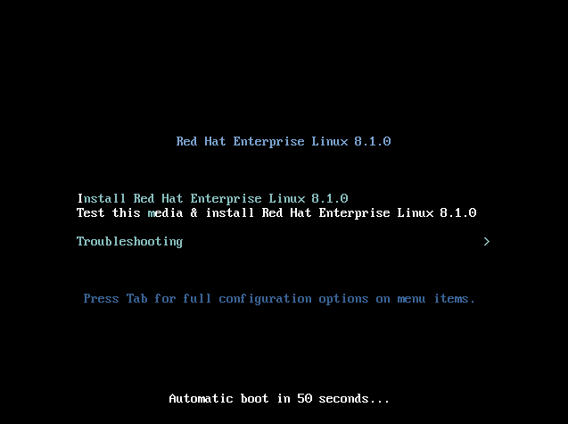
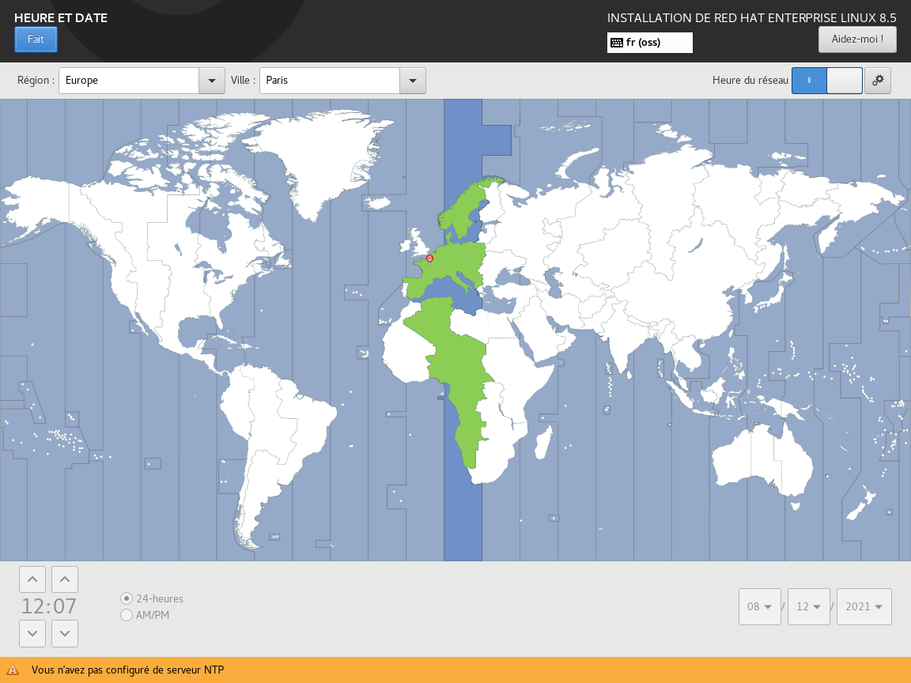
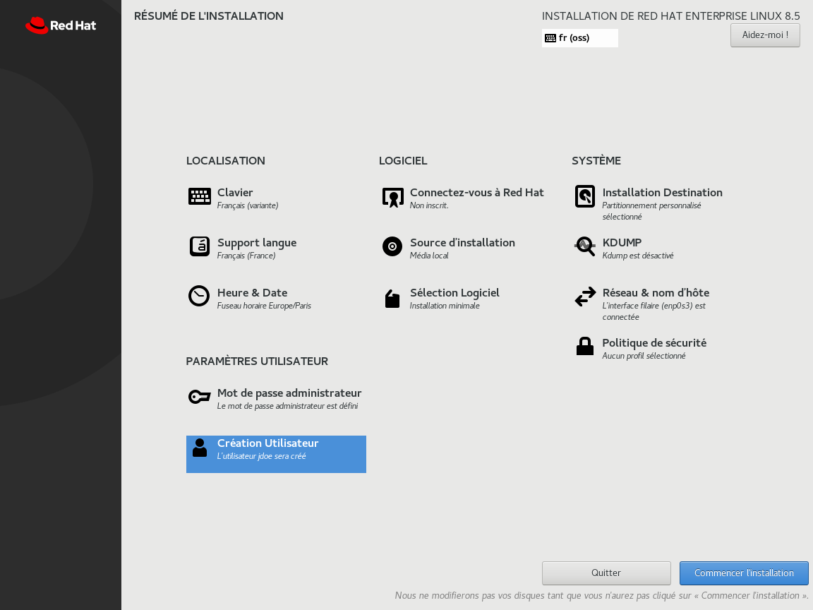

Pierre Blanchet
Dernière mise à jour : %date%
Ce guide vise à rendre un système Red Hat plus résilient face aux attaques informatiques, ce qu’on appelle un système durci. Il se base principalement sur les recommandations CIS et ANSSI.
Il introduit deux modes de fonctionnement du système : nominal et maintenance. En mode nominal, les points suivants sont désactivés :
Pour les réactiver, il faut passer en mode « maintenance ». Pour passer d’un mode à l’autre, il est nécessaire de redémarrer le système.
Ce guide décrit la procédure à suivre pour un système Red Hat Linux Entreprise 8 (Testé avec les versions 8.1 à 8.5).
Si ce guide n’a pas été suivi dès l’installation du système, il sera compliqué voire très fastidieux de mettre en place l’ensemble des règles définies dans ce guide.
Certains des paramètres de sécurisation sont uniquement ou plus facilement sélectionnables lors de l’installation. Ce sont, en particulier, la répartition des partitions et la sélection initiale de logiciels à installer.
L’installation du système est décrite au chapitre ci-dessous.
La documentation constructeur est disponible sur le site Red Hat.
Pour rappel, pendant l’installation et avant l’installation des correctifs de sécurité, l’ordinateur est potentiellement vulnérable et doit donc être déconnecté ou au pire connecté à un réseau maitrisé.
Quand cela est possible, les règles de sécurisation ont été traduites dans un script qui permet d’appliquer les paramètres demandés sans interaction de l’utilisateur.
Un certain nombre d’opérations (trop complexes ou dépendantes du réseau d’installation) sont à réaliser manuellement, et sont décrites dans le chapitre dédié.
L’audit permet de s’assurer que le système est correctement configuré. Il est à réaliser à intervalles réguliers pour s’assurer qu’il n’y a pas de déviations ou de dérives du système. Par exemple, des mises à jour du système peuvent modifier des permissions sur le système de fichiers.
L’audit est décrit au chapitre dédié.
Il est conseillé de s’assurer que le matériel virtualisé soit réduit au minimum : par exemple pas de carte son, pas de port série … pour limiter la surface d’attaque. Le disque dur alloué doit être au minimum de 48 Go
Démarrer le système depuis l’image ISO: 
Puis dès que l’installateur graphique est démarré, sélectionner France, Français(France) comme paramètres linguistiques. S’assurer que le clavier est positionné à fr(oss) après avoir cliqué sur Continuer.
Depuis l’écran principal, régler l’heure & date pour pointer vers le fuseau horaire cible et si disponibles, définir plusieurs sources NTP fiables. 
Depuis l’écran Résumé de l’installation, positionner la Sélection Logiciel à « Installation minimale » :
Depuis l’écran Résumé de l’installation, positionner le paramètre KDUMP à désactivé :
Depuis l’écran Résumé de l’installation, cliquer sur « Nom du réseau &…» pour activer la carte réseau et modifier les différents paramètres réseau (dont le nom DNS).
Depuis l’écran Résumé de l’installation, dans le chapitre « Installation Destination » pour le partitionnement du disque dur, choisissez « Personnalisé » (cliquer sur Fait) :
Puis garder les options par défaut pour le disque (LVM). Cliquer sur + pour créer les partitions suivantes :
| Point de montage | Taille Minimum |
|---|---|
| / | 4 Gio |
| /boot | 1 Gio |
| /boot/efi | 512 Mio |
| /usr | 12 Gio |
| /tmp | 1 Gio |
| /home | 2 Gio |
| /var | 4 Gio |
| /var/log | 4 Gio |
| /var/tmp | 4 Gio |
| /var/log/audit | 4 Gio |
| /srv ou /opt | 6 Gio |
| swap | 4 Gio (ou 20% de la mémoire vive) |
Valider les modifications à effectuer sur le disque :
Ne pas sélectionner de politique de sécurité.
Le chapitre But du système est optionnel et pour information seulement.
Définir un mot de passe administrateur (root) et créer un compte utilisateur. Veiller à choisir des mots de passe conformes à la politique de sécurité.
Quand tous les paramètres sont réglés, cliquer sur ‘Commencer l’installation’: 
Redémarrer une fois l’installation terminée :
Passer ensuite à la sécurisation dans le chapitre ci-dessous : Sécurisation.
Une fois l’installation terminée selon le chapitre précédent, la sécurisation proprement dite se passe en quatre étapes :
Copier le script fourni en attachement dans le répertoire /root, puis le lancer dans une session root (ou dans une session sudo).
Il est obligatoire d’avoir inséré un DVD d’installation dans le lecteur (ou à défaut d’avoir monté l’image ISO sur le répertoire /mnt/disc).
Une fois lancé, le script pose quelques questions pour affiner le paramétrage.
Une fois la sécurisation effectuée (et le système redémarré), il n’est plus possible de relancer le script : le montage des images ISO n’étant plus possible.
Voir le chapitre Utiliser le système pour les procédures à appliquer pour utiliser des supports externes.
Le paquet chrony est installé pour assurer la synchronisation du temps. Il est primordial de s’assurer que le démon puisse contacter à minima un (au mieux 3) serveur de temps fiable. Voir HARDE-RHEL-099.
Les journaux du système doivent être renvoyés sur un serveur central pour :
Le script positionne automatiquement cette valeur mais pour la confirmer, voir HARDE-RHEL-236.
Pour rappel, il est évidemment nécessaire d’installer au plus tôt les dernières mises à jour de sécurité.
En plus des mises à jour de sécurité, des correctifs fonctionnels peuvent être nécessaires pour résoudre des défauts logiciels ou améliorer le fonctionnement du système.
Il est donc fortement recommandé qu’un processus de veille soit mise en place pour identifier au plus tôt les correctifs indispensables au maintien en condition de sécurité (MCS) ou nécessaires au bon fonctionnement du système (MCO).
La directive HARDE-RHEL-51 demande à ce qu’une liste blanche des démons (services résidents) soit établie.
La directive HARDE-RHEL-143 demande à ce qu’une liste blanche et une liste noire des utilisateurs soient établies.
Le catalogue des règles de sécurisation donne le détail des étapes à réaliser pour auditer le système. Comme pour la sécurisation, lorsque cela a été possible, ces étapes ont été automatisées à l’aide d’un script harde.sh fourni en attachement. Ce script a été écrit en utilisant le framework bats-core (également fourni en attachement).
Ce catalogue contient des règles définies à partir des recommandations ANSSI et du benchmark CIS. Certaines de ces règles sont positionnées à « Ne pas implémenter » car elles ont été jugées non pertinentes ou non applicables dans le cadre de ce projet. Elles sont néanmoins présentes pour offrir une vision globale des recommandations. La majorité de ces règles sont mis en place par un paramétrage du système mais certaines demandent la mise en place de procédures organisationnelles.
Supprimer les services non nécessaires. Une liste de paquets le plus souvent inutiles et désinstallée par la commande suivante:
| À implémenter | |||
|---|---|---|---|
| Niveau | 1 | ||
| Référence CIS | Contrôle | ||
| ANSSI | R1 |
Pour implémenter cette règle, utiliser le script fourni, dont voici un extrait du code source concernant HARDE-RHEL-001 :
#! /bin/bash
echo "HARDE-RHEL-001 : Minimisation des services installés"
# If we're online update
dnf update
# packages that we depends on
dnf install --assumeyes net-tools tar policycoreutils-python-utils \
setools-console chrony rsyslog bzip2 firewalld audit usbguard rng-tools \
openscap-scanner libcap-ng-utils aide rsyslog rsyslog-gnutls \
audispd-plugins tmux dnf-automatic sssd-ipa sudo policycoreutils \
python3-subscription-manager-rhsm fapolicyd aide scap-security-guide sssd \
realmd oddjob oddjob-mkhomedir adcli samba-common samba-common-tools \
krb5-workstation openldap-clients python3-policycoreutils
dnf remove --assumeyes abrt-addon-ccpp abrt-plugin-sosreport iprutils nfs-utils \
abrt-addon-python tuned abrt-addon-kerneloops gssproxy abrt-plugin-logger \
abrt-cli abrt-plugin-rhtsupport sendmail abrt setroubleshoot \
setroubleshoot-server mcstrans xinetd xorg-x11*.* ypbind telnet
# Fin: HARDE-RHEL-001Il n’y a pas de méthode automatique pour déterminer que la configuration est aussi minimale que possible.
Le script d’audit fait une capture des processus exécutés. Cette doit être revue manuellement et comparée entre deux exécutions successives pour déterminer la légitimité des processus présents.
# lister les processus
ps aux
# lister les services réseaux
ss -tulpen
# lister les sockets UNIX
ss -xpActiver seulement les options nécessaires. Cette directive est générique et ne peut être mise en place de manière automatique.
| À implémenter | |||
|---|---|---|---|
| Niveau | 2 | ||
| Référence CIS | Contrôle | ||
| ANSSI | R2 |
Il faut lors de l’installation et de manière générale n’activer que les options nécessaires. Cette directive est générique et ne peut être mise en place de manière automatique.
Analyser pour connaitre les privilèges nécessaires pour limiter leur usage. Cette directive est générique et ne peut être mise en place de manière automatique.
| À implémenter | |||
|---|---|---|---|
| Niveau | 3 | ||
| Référence CIS | Contrôle | ||
| ANSSI | R3 |
À déterminer ### Méthode d’audit
Activer cloisonnement et contrôle de privilèges. Cette directive est générique et ne peut être mise en place de manière automatique.
| À implémenter | |||
|---|---|---|---|
| Niveau | 4 | ||
| Référence CIS | Contrôle | ||
| ANSSI | R4 |
À déterminer ### Méthode d’audit
Conception de plusieurs couches de sécurité indépendantes et complémentaires en vue de retarder un attaquant dont l’objectif est la compromis- sion du système. Cette directive est générique et ne peut être mise en place de manière automatique.
| À implémenter | |||
|---|---|---|---|
| Niveau | 1 | ||
| Référence CIS | Contrôle | ||
| ANSSI | R5 |
À déterminer ### Méthode d’audit
Utiliser des environnements distincts. Cette directive est générique est ne peut être mise en place de manière automatique.
| À implémenter | |||
|---|---|---|---|
| Niveau | 3 | ||
| Référence CIS | Contrôle | ||
| ANSSI | R6 |
À déterminer ### Méthode d’audit
Activités journalisées et activées sur un système externe. Cette directive est générique et ne peut être mise en place de manière automatique.
| À implémenter | |||
|---|---|---|---|
| Niveau | 3 | ||
| Référence CIS | Contrôle | ||
| ANSSI | R7 |
À déterminer ### Méthode d’audit
Procédure de mise à jour et activité de veille. Cette directive est générique et ne peut être mise en place de manière automatique.
| À implémenter | |||
|---|---|---|---|
| Niveau | 1 | ||
| Référence CIS | Contrôle | ||
| ANSSI | R8 |
À déterminer ### Méthode d’audit
Appliquer les recommandations de configuration mentionnées dans la note technique « Recommandations de configuration matérielle de postes clients et serveurs x86 ». Cette directive est générique et ne peut être mise en place de manière automatique.
| À implémenter | |||
|---|---|---|---|
| Niveau | 2 | ||
| Référence CIS | Contrôle | ||
| ANSSI | R9 |
À déterminer ### Méthode d’audit
Installer une version 64 bits. Le chapitre Installation ci-dessus décrit le processus.
| À implémenter | |||
|---|---|---|---|
| Niveau | 2 | ||
| Référence CIS | Contrôle | ||
| ANSSI | R10 |
À déterminer ### Méthode d’audit
Désactiver cramfs, freevxfs, jffs2, hfs, hfsplus, squashfs, udf et vfat :
| À implémenter | |||
|---|---|---|---|
| Niveau | 1 | ||
| Référence CIS | RHEL 8 1.1.1 | Contrôle | 05.1 Establish Secure Configurations |
| ANSSI |
Pour implémenter cette règle, utiliser le script fourni, dont voici un extrait du code source concernant HARDE-RHEL-011 :
echo "HARDE-RHEL-11 : Désactiver les sytèmes de fichiers inutilisés"
for i in cramfs freevxfs jffs2 hfs hfsplus squashfs crc-itu-t udf fat vfat; do
cat >"/etc/modprobe.d/$i".conf <<EOF
install $i /bin/true
EOF
rmmod "$i" || true
done
# Fin: HARDE-RHEL-11/home doit être installé dans une partition séparée d’au moins 1GB avec les options nodev
| À implémenter | |||
| Niveau | 4 | ||
| Référence CIS | RHEL 8 1.1.13 RHEL 8 1.1.14 |
Contrôle | 05.1 Establish Secure Configurations 05.1 Establish Secure Configurations |
| ANSSI |
Pour implémenter cette règle, utiliser le script fourni, dont voici un extrait du code source concernant HARDE-RHEL-012 :
#! /bin/bash
echo "HARDE-RHEL-12 : Partition séparée pour /home"
mount | grep -q -E '/home\s' || harde_error "/home n'est pas une partition séparée !"
# Fin: HARDE-RHEL-12Red Hat 8 est conforme par défaut.
| À implémenter | |||
|---|---|---|---|
| Niveau | 1 | ||
| Référence CIS | RHEL 8 1.1.15 RHEL 8 1.1.16 RHEL 8 1.1.17 |
Contrôle | 05.1 Establish Secure Configurations 05.1 Establish Secure Configurations 02.6 Address unapproved software |
| ANSSI |
Ces options ont été activées lors des opérations manuelles après l’installation.
Rajouter la ligne suivante à /etc/fstab, si elle est manquante :
none /dev/shm tmpfs nosuid,nodev,noexec,defaults 0 0Rajouter les options dans /etc/fstab pour lecteur DVD ou similaires. Cette directive ne peut être mise en place de manière automatique.
| À implémenter | |||
|---|---|---|---|
| Niveau | 1 | ||
| Référence CIS | RHEL 8 1.1.18 RHEL 8 1.1.19 RHEL 8 1.1.20 |
Contrôle | 05.1 Establish Secure Configurations 05.1 Establish Secure Configurations 02.6 Address unapproved software |
| ANSSI |
À déterminer ### Méthode d’audit
/tmp doit être installé dans une partition séparée d’au moins 1GB avec les options nodev,nosuid,noexec
| À implémenter | |||
|---|---|---|---|
| Niveau | 1 | ||
| Référence CIS | RHEL 8 1.1.2 RHEL 8 1.1.3 RHEL 8 1.1.4 RHEL 8 1.1.5 |
Contrôle | 05.1 Establish Secure Configurations 05.1 Establish Secure Configurations 05.1 Establish Secure Configurations 02.6 Address unapproved software |
| ANSSI |
Pour implémenter cette règle, utiliser le script fourni, dont voici un extrait du code source concernant HARDE-RHEL-015 :
echo "HARDE-RHEL-15 : S'assurer de la configuration de /tmp"
mount | grep -q -E '/tmp\s' || harde_error "/tmp n'est pas une partition séparée !"
# Fin: HARDE-RHEL-15Pour désactiver le stockage USB, lancer les commandes du chapitre suivante. Une alternative est d’autoriser le module usb-storage mais de contrôler et limiter les périphériques USB pouvant être connectés en configurant usb-guard. La configuration d’USB n’est pas décrite dans ce guide.
| À implémenter | |||
|---|---|---|---|
| Niveau | 1 | ||
| Référence CIS | RHEL 8 1.1.23 | Contrôle | 08.4 Configure Anti-Malware Scanning of Removable Devices 08.5 Configure Devices Not To Auto-run Content |
| ANSSI |
Pour implémenter cette règle, utiliser le script fourni, dont voici un extrait du code source concernant HARDE-RHEL-016 :
echo "HARDE-RHEL-16 : Désactiver le stockage USB"
declare -a modules
modules=(
[0]="usb-storage"
)
for i in "${modules[@]}"; do
cat >"/etc/modprobe.d/$i.conf" <<EOF
install $i /bin/true
EOF
rmmod "$i" || true
done
usbguard generate-policy >/etc/usbguard/rules.conf
# Fin: HARDE-RHEL-16/var doit être installé dans une partition séparé d’au moins 4GB avec les options nodev
| À implémenter | |||
|---|---|---|---|
| Niveau | 4 | ||
| Référence CIS | RHEL 8 1.1.6 | Contrôle | 05.1 Establish Secure Configurations |
| ANSSI |
Pour implémenter cette règle, utiliser le script fourni, dont voici un extrait du code source concernant HARDE-RHEL-017 :
#! /usr/bin/env bash
echo "HARDE-RHEL-17 : S'assurer de la configuration de /var"
mount | grep -E '\s/var\s' | grep -q nodev || harde_error "Options de montage non valide pour /var"
# Fin: HARDE-RHEL-17/var/tmp doit être installé dans une partition séparé d’au moins 1GB avec les options nodev,nosuid,noexec
| À implémenter | |||
|---|---|---|---|
| Niveau | 4 | ||
| Référence CIS | RHEL 8 1.1.7 RHEL 8 1.1.8 RHEL 8 1.1.9 RHEL 8 1.1.10 |
Contrôle | 05.1 Establish Secure Configurations 05.1 Establish Secure Configurations 05.1 Establish Secure Configurations 02.6 Address unapproved software |
| ANSSI |
Pour implémenter cette règle, utiliser le script fourni, dont voici un extrait du code source concernant HARDE-RHEL-018 :
#! /bin/bash
echo "HARDE-RHEL-018 : S'assurer de la configuration de /var/tmp"
mount | grep -E '/var/tmp\s' | grep nodev | grep noexec | grep nosuid || harde_error "Options de montage non valide pour /var/tmp"
# Fin: HARDE-RHEL-018Le principe de minimisation pousse à partitionner le stockage pour limiter l’impact en cas de remplissage abusif (attaque, journaux, processus fou …) et pour limiter les droits sur des emplacements ouverts en écriture (par exemple en limitant la possibilité d’un utilitaire suid à la seule partition /usr celle-ci n’étant accessible qu’aux administrateurs voire en mettant la partition complète en lecture seule).
Le chapitre Installation décrit le minimum de partitions à créer sur le système.
Voici la liste des options recommandées à appliquer dans le fichier /etc/fstab pour les points de montage :
| Point de Montage | Options | Description |
|---|---|---|
| / | pas d’option | Partition racine, contient le reste de l’arborescence |
| /boot et /boot/efi | nodev,nosuid,noexec,noauto | Contient le noyau et le chargeur de démarrage. Pas d’accès nécessaire une fois le boot terminé (sauf mise à jour) |
| /dev/shm | nodev,nosuid,noexec | Contient les segments de mémoire partagés |
| /home | nodev,nosuid,noexec | Contient les HOME utilisateurs. Montage en lecture seule si non utilisé |
| /opt | nodev,nosuid (ro optionnel) | Packages additionnels au système. Montage en lecture seule si non utilisé |
| /proc | hidepid=2,gid=sudogrp | Contient des informations sur les processus et le système |
| /srv | nodev,nosuid (noexec,ro optionnels) | Contient des fichiers servis par un service type web, ftp, etc. |
| /tmp | nodev,nosuid,noexec | Fichiers temporaires. Ne doit contenir que des éléments non exécutables. Nettoyé après redémarrage ou préférablement de type tmpfs |
| /usr | nodev (ro optionnel) | Contient la majorité des utilitaires et fichiers système |
| /var | nodev,nosuid,noexec | Partition contenant des fichiers variables pendant la vie du système (mails, fichiers PID, bases de données d’un service) |
| /var/log | nodev,nosuid,noexec | Contient les logs du système |
| /var/log/audit | nodev,nosuid,noexec | Contient les logs d’audit du système |
| /var/tmp | nodev,nosuid,noexec | Fichiers temporaires conservés après extinction |
Le script rajoute les lignes suivantes :
proc /proc proc rw,nosuid,nodev,noexec,relatime,hidepid=2,gid=sudogrp 0 0
none /dev/shm tmpfs nosuid,nodev,noexec,defaults 0 0À titre d’exemple, voici le fichier édité pour une machine virtuelle (sans les options « ro » de lecture seule) :
#
# /etc/fstab
# Created by anaconda on Fri Sep 11 11:21:06 2020
#
# Accessible filesystems, by reference, are maintained under '/dev/disk/'.
# See man pages fstab(5), findfs(8), mount(8) and/or blkid(8) for more info.
#
# After editing this file, run 'systemctl daemon-reload' to update systemd
# units generated from this file.
#
/dev/mapper/rhel_lab-root / xfs defaults 0 0
UUID=3fe99bee-938f-4751-a956-b4335bc32e7c /boot xfs nosuid,nodev,noexec,noauto,defaults 0 0
UUID=16FD-1FB3 /boot/efi vfat nosuid,nodev,noexec,noauto,umask=0077,shortname=winnt 0 2
/dev/mapper/rhel_lab-home /home xfs nosuid,nodev,noexec,defaults 0 0
/dev/mapper/rhel_lab-srv /srv xfs nosuid,nodev,defaults 0 0
/dev/mapper/rhel_lab-tmp /tmp xfs nosuid,nodev,noexec,defaults 0 0
/dev/mapper/rhel_lab-usr /usr xfs nodev,defaults 0 0
/dev/mapper/rhel_lab-var /var xfs nosuid,nodev,noexec,defaults 0 0
/dev/mapper/rhel_lab-var_log /var/log xfs nosuid,nodev,noexec,defaults 0 0
/dev/mapper/rhel_lab-var_log_audit /var/log/audit xfs nosuid,nodev,noexec,defaults 0 0
/dev/mapper/rhel_lab-var_tmp /var/tmp xfs nosuid,nodev,noexec,defaults 0 0
/dev/mapper/rhel_lab-swap swap swap defaults 0 0
proc /proc proc rw,nosuid,nodev,noexec,relatime,hidepid=2,gid=sudogrp 0 0
none /dev/shm tmpfs nosuid,nodev,noexec,defaults 0 0| À implémenter | |||
|---|---|---|---|
| Niveau | 2 | ||
| Référence CIS | Contrôle | ||
| ANSSI | R12 |
Pour implémenter cette règle, utiliser le script fourni, dont voici un extrait du code source concernant HARDE-RHEL-019 :
#! /usr/bin/env bash
echo "HARDE-RHEL-19 : Partitionnement type"
harde_backup_file /etc/fstab
grep -q ^proc /etc/fstab || cat >/etc/fstab <<EOF
proc /proc proc rw,nosuid,nodev,noexec,relatime,hidepid=2,gid=sudogrp 0 0
EOF
harde_backup_file /etc/fstab
grep -q /dev/shm /etc/fstab || cat >/etc/fstab <<EOF
none /dev/shm tmpfs nosuid,nodev,noexec,defaults 0 0
EOF
harde_backup_file /etc/fstab
cat >/tmp/fs.sed <<EOF
#! /usr/bin/sed
\%^\#%n
#
\%^[-A-Za-z=_/0-9]+ +/ %s|([^ ]*) +([^ ]+) +([^ ]+) +([^ ]+) +([^ ]+) +([^ ]+)|\1 \2 \3 defaults \5 \6|
\%^[-A-Za-z=_/0-9]+ +/boot %s|([^ ]*) +([^ ]+) +([^ ]+) +([^ ]+) +([^ ]+) +([^ ]+)|\1 \2 \3 nosuid,nodev,noexec,defaults \5 \6|
\%^[-A-Za-z=_/0-9]+ +/boot/efi %s|([^ ]*) +([^ ]+) +([^ ]+) +([^ ]+) +([^ ]+) +([^ ]+)|\1 \2 \3 nosuid,nodev,noexec,defaults \5 \6|
\%^[-A-Za-z=_/]+ +/home %s|([^ ]*) +([^ ]+) +([^ ]+) +([^ ]+) +([^ ]+) +([^ ]+)|\1 \2 \3 nosuid,nodev,noexec,defaults \5 \6|
\%^[-A-Za-z=_/]+ +/opt %s|([^ ]*) +([^ ]+) +([^ ]+) +([^ ]+) +([^ ]+) +([^ ]+)|\1 \2 \3 nosuid,nodev,defaults \5 \6|
\%^[-A-Za-z=_/]+ +/srv %s|([^ ]*) +([^ ]+) +([^ ]+) +([^ ]+) +([^ ]+) +([^ ]+)|\1 \2 \3 nosuid,nodev,defaults \5 \6|
\%^[-A-Za-z=_/]+ +/tmp %s|([^ ]*) +([^ ]+) +([^ ]+) +([^ ]+) +([^ ]+) +([^ ]+)|\1 \2 \3 nosuid,nodev,noexec,defaults \5 \6|
\%^[-A-Za-z=_/]+ +/usr %s|([^ ]*) +([^ ]+) +([^ ]+) +([^ ]+) +([^ ]+) +([^ ]+)|\1 \2 \3 nodev,defaults \5 \6|
\%^[-A-Za-z=_/]+ +/var %s|([^ ]*) +([^ ]+) +([^ ]+) +([^ ]+) +([^ ]+) +([^ ]+)|\1 \2 \3 nosuid,nodev,noexec,defaults \5 \6|
\%^[-A-Za-z=_/]+ +/var/log %s|([^ ]*) +([^ ]+) +([^ ]+) +([^ ]+) +([^ ]+) +([^ ]+)|\1 \2 \3 nosuid,nodev,noexec,defaults \5 \6|
\%^[-A-Za-z=_/]+ +/var/tmp %s|([^ ]*) +([^ ]+) +([^ ]+) +([^ ]+) +([^ ]+) +([^ ]+)|\1 \2 \3 nosuid,nodev,noexec,defaults \5 \6|
\%^[-A-Za-z=_/]+ +/var/log/audit %s|([^ ]*) +([^ ]+) +([^ ]+) +([^ ]+) +([^ ]+) +([^ ]+)|\1 \2 \3 nosuid,nodev,noexec,defaults \5 \6|
\%^proc%cproc /proc proc rw,nosuid,nodev,noexec,relatime,hidepid=2,gid=sudogrp 0 0
\%^[-A-Za-z=_/]+ +/dev/shm %s|([^ ]*) +([^ ]+) +([^ ]+) +([^ ]+) +([^ ]+) +([^ ]+)|\1 \2 \3 nosuid,nodev,noexec,defaults \5 \6|
EOF
sed -Ef /tmp/fstab.sed /etc/fstab > /etc/fstab.new && mv /etc/fstab.new /etc/fstab
mkdir -p /etc/systemd/system/systemd-logind.service.d
# makes systemd-logind work with hidepid
harde_backup_file /etc/systemd/system/systemd-logind.service.d/hidepid.conf
cat >/etc/systemd/system/systemd-logind.service.d/hidepid.conf <<EOF
[Service]
SupplementaryGroups=sudogrp
EOF
# Fin: HARDE-RHEL-19Ne pas monter /boot automatiquement au démarrage. S’assurer que /boot est monté pour les mises à jour (via procédure ou script).
| À implémenter | |||
|---|---|---|---|
| Niveau | 3 | ||
| Référence CIS | Contrôle | ||
| ANSSI | R13 |
À déterminer ### Méthode d’audit
Limiter les paquets installés au strict nécessaire en partant d’un «profil» minimum (sélectionner Installation minimale lors de l’installation) et maintenir une liste des paquets installés. Cette directive est générique et ne peut être mise en place de manière automatique.
| À implémenter | |||
|---|---|---|---|
| Niveau | 2 | ||
| Référence CIS | Contrôle | ||
| ANSSI | R14 |
À déterminer ### Méthode d’audit
N’utiliser que les dépôts officiels. Cette directive est générique et ne peut être mise en place de manière automatique.
| À implémenter | |||
|---|---|---|---|
| Niveau | 1 | ||
| Référence CIS | Contrôle | ||
| ANSSI | R15 |
À déterminer ### Méthode d’audit
Préférer les versions durcis des paquets si disponible. Cette directive est générique est ne peut être mise en place de manière automatique.
| À implémenter | |||
|---|---|---|---|
| Niveau | 3 | ||
| Référence CIS | Contrôle | ||
| ANSSI | R16 |
À déterminer ### Méthode d’audit
Le mot de passe root doit être suffisamment robuste. Cette directive est générique et ne peut être mise en place de manière automatique.
| À implémenter | |||
|---|---|---|---|
| Niveau | 1 | ||
| Référence CIS | Contrôle | ||
| ANSSI | R18 |
À déterminer ### Méthode d’audit
Installation au plus tôt des éléments secrets et remplacement des éléments par défaut. Cette directive est générique est ne peut être mise en place de manière automatique.
| À implémenter | |||
|---|---|---|---|
| Niveau | 3 | ||
| Référence CIS | Contrôle | ||
| ANSSI | R20 |
À déterminer ### Méthode d’audit
Lancer la commande suivante :
| À implémenter | |||
|---|---|---|---|
| Niveau | 1 | ||
| Référence CIS | RHEL 8 1.10 | Contrôle | 14.4 Encrypt All Sensitive Information in Transit |
| ANSSI |
Pour implémenter cette règle, utiliser le script fourni, dont voici un extrait du code source concernant HARDE-RHEL-026 :
#! /bin/bash
echo "HARDE-RHEL-026 : S'assurer que les politiques de chiffrement historiques soit désactivées"
update-crypto-policies --set DEFAULT
update-crypto-policies
# Fin: HARDE-RHEL-026Lancer la commande suivante :
| À implémenter | |||
|---|---|---|---|
| Niveau | 4 | ||
| Référence CIS | RHEL 8 1.11 | Contrôle | 14.4 Encrypt All Sensitive Information in Transit |
| ANSSI |
Pour implémenter cette règle, utiliser le script fourni, dont voici un extrait du code source concernant HARDE-RHEL-027 :
#! /bin/bash
# FIXME should probably switch to FUTURE or something more secure
# See https://workbench.cisecurity.org/tickets/12887
echo "HARDE-RHEL-027 : S'assurer que le mode FIPS ou FUTURE est activé pour le chiffrement"
update-crypto-policies --set FIPS
update-crypto-policies
# Fin: HARDE-RHEL-027Créer le fichier de configuration en lançant la commande suivante. Ce paramètrage n’est pris en compte qu’au redémarrage ou au lancement de la commande /sbin/sysctl –system.
| À implémenter | |||
|---|---|---|---|
| Niveau | 1 | ||
| Référence CIS | RHEL 8 3.1.1 | Contrôle | 05.1 Establish Secure Configurations |
| ANSSI | R22 |
Pour implémenter cette règle, utiliser le script fourni, dont voici un extrait du code source concernant HARDE-RHEL-028 :
echo "HARDE-RHEL-28 : S'assurer que l'IP Forwarding est désactivé"
cat >/etc/sysctl.d/30forwarding.conf <<EOF
# Pas de routage entre les interfaces
net.ipv4.ip_forward = 0
EOF
# Fin: HARDE-RHEL-28Créer le fichier de configuration en lançant la commande suivante. Ce paramétrage n’est pris en compte qu’au redémarrage ou au lancement de la commande /sbin/sysctl –system.
| À implémenter | |||
|---|---|---|---|
| Niveau | 1 | ||
| Référence CIS | RHEL 8 3.1.2 RHEL 8 3.2.2 RHEL 8 3.2.3 |
Contrôle | 05.1 Establish Secure Configurations 05.1 Establish Secure Configurations 05.1 Establish Secure Configurations |
| ANSSI | R22 R22 R22 |
Pour implémenter cette règle, utiliser le script fourni, dont voici un extrait du code source concernant HARDE-RHEL-029 :
echo "HARDE-RHEL-29 : Désactiver les ICMP Redirects"
cat >/etc/sysctl.d/35icmpredirects.conf <<EOF
# Ne pas envoyer de redirections ICMP
net.ipv4.conf.all.send_redirects = 0
net.ipv4.conf.default.send_redirects = 0
# Ne pas accepter les ICMP de type redirect
net.ipv4.conf.all.accept_redirects = 0
net.ipv4.conf.all.secure_redirects = 0
net.ipv4.conf.default.accept_redirects = 0
net.ipv4.conf.default.secure_redirects = 0
EOF
# Fin: HARDE-RHEL-29Créer le fichier de configuration en lançant la commande suivante. Ce paramètrage n’est pris en compte qu’au redémarrage ou au lancement de la commande /sbin/sysctl –system.
| À implémenter | |||
|---|---|---|---|
| Niveau | 1 | ||
| Référence CIS | RHEL 8 3.2.1 | Contrôle | 05.1 Establish Secure Configurations |
| ANSSI | R22 |
Pour implémenter cette règle, utiliser le script fourni, dont voici un extrait du code source concernant HARDE-RHEL-030 :
echo "HARDE-RHEL-30 : Refuser les paquets routés par la source"
cat >/etc/sysctl.d/40sourceroute.conf <<EOF
# Refuser les paquets de source routing
net.ipv4.conf.all.accept_source_route = 0
net.ipv4.conf.default.accept_source_route = 0
EOF
# Fin: HARDE-RHEL-30Créer le fichier de configuration en lançant la commande suivante. Ce paramétrage n’est pris en compte qu’au redémarrage ou au lancement de la commande /sbin/sysctl –system.
| À implémenter | |||
|---|---|---|---|
| Niveau | 1 | ||
| Référence CIS | RHEL 8 3.2.4 | Contrôle | 06.2 Activate audit logging 6.3 Enable Detailed Logging |
| ANSSI | R22 R22 |
Pour implémenter cette règle, utiliser le script fourni, dont voici un extrait du code source concernant HARDE-RHEL-031 :
echo "HARDE-RHEL-31 : S'assurer que les paquets suspects soient loggués"
cat >/etc/sysctl.d/45logmartians.conf <<EOF
# Loguer les paquets ayant des IPs anormales
net.ipv4.conf.all.log_martians = 1
net.ipv4.conf.default.log_martians = 1
EOF
# Fin: HARDE-RHEL-31Créer le fichier de configuration en lançant la commande suivante. Ce paramètrage n’est pris en compte qu’au redémarrage ou au lancement de la commande /sbin/sysctl –system.
| À implémenter | |||
|---|---|---|---|
| Niveau | 1 | ||
| Référence CIS | RHEL 8 3.2.5 | Contrôle | 05.1 Establish Secure Configurations |
| ANSSI |
Pour implémenter cette règle, utiliser le script fourni, dont voici un extrait du code source concernant HARDE-RHEL-032 :
echo "HARDE-RHEL-32 : Refuser les ICMP broadcast"
cat >/etc/sysctl.d/50icmpbroadcast.conf <<EOF
# Refuser les requêtes ICMP vers une adresse de broadcast/multicast
net.ipv4.icmp_echo_ignore_broadcasts = 1
EOF
# Fin: HARDE-RHEL-32Créer le fichier de configuration en lançant la commande suivante. Ce paramètrage n’est pris en compte qu’au redémarrage ou au lancement de la commande /sbin/sysctl –system.
| À implémenter | |||
|---|---|---|---|
| Niveau | 1 | ||
| Référence CIS | RHEL 8 3.2.6 | Contrôle | 05.1 Establish Secure Configurations |
| ANSSI |
Pour implémenter cette règle, utiliser le script fourni, dont voici un extrait du code source concernant HARDE-RHEL-033 :
echo "HARDE-RHEL-33 : Ignorer les réponses ICMP douteuses"
cat >/etc/sysctl.d/55icmpbogus.conf <<EOF
# Refuser les réponses ICMP bogus
net.ipv4.icmp_ignore_bogus_error_responses = 1
EOF
# Fin: HARDE-RHEL-33Créer le fichier de configuration en lançant la commande suivante. Ce paramètrage n’est pris en compte qu’au redémarrage ou au lancement de la commande /sbin/sysctl –system.
| À implémenter | |||
|---|---|---|---|
| Niveau | 1 | ||
| Référence CIS | RHEL 8 3.2.7 | Contrôle | 05.1 Establish Secure Configurations |
| ANSSI | R22 |
Pour implémenter cette règle, utiliser le script fourni, dont voici un extrait du code source concernant HARDE-RHEL-034 :
echo "HARDE-RHEL-34 : Activer le filtrage par routage inversé"
cat >/etc/sysctl.d/60rp_filter.conf <<EOF
# Filtrage par chemin inverse
net.ipv4.conf.all.rp_filter = 1
net.ipv4.conf.default.rp_filter = 1
EOF
# Fin: HARDE-RHEL-34Créer le fichier de configuration en lançant la commande suivante. Ce paramètrage n’est pris en compte qu’au redémarrage ou au lancement de la commande /sbin/sysctl –system.
| À implémenter | |||
|---|---|---|---|
| Niveau | 1 | ||
| Référence CIS | RHEL 8 3.2.8 | Contrôle | 05.1 Establish Secure Configurations |
| ANSSI | R22 |
Pour implémenter cette règle, utiliser le script fourni, dont voici un extrait du code source concernant HARDE-RHEL-035 :
echo "HARDE-RHEL-35 : Activer les TCP Syn Cookies"
cat >/etc/sysctl.d/65syncookies.conf <<EOF
# Utiliser les SYN cookies
net.ipv4.tcp_syncookies = 1
EOF
# Fin: HARDE-RHEL-35IPv6 est désactivé dans notre configuration
| À implémenter | |||
|---|---|---|---|
| Niveau | 1 | ||
| Référence CIS | RHEL 8 3.2.9 | Contrôle | 05.1 Establish Secure Configurations |
| ANSSI |
À déterminer ### Méthode d’audit
Éditer /etc/default/grub et modifier le paramètre GRUB_CMDLINE_LINUX pour inclure ipv6.disable=1 puis lancer la commande suivante :
| À implémenter | |||
|---|---|---|---|
| Niveau | 4 | ||
| Référence CIS | RHEL 8 3.6 | Contrôle | 09.2 Ensure Only Approved Ports, Protocols and Services Are Running |
| ANSSI |
Pour implémenter cette règle, utiliser le script fourni, dont voici un extrait du code source concernant HARDE-RHEL-037 :
#! /bin/bash
echo "HARDE-RHEL-37 : Désactiver IPV6"
cat >/etc/sysctl.d/70disable_ipv6.conf <<EOF
net.ipv6.conf.all.disable_ipv6 = 1
net.ipv6.conf.default.disable_ipv6 = 1
EOF
# Samba and others may require the stack to be available, even with no interfaces
# so the follwoing will have to be disabled
if ! grep -q -E 'ipv6.disable=' /etc/default/grub; then
sed -e 's/\(GRUB_CMDLINE_LINUX="[^"]*\)"/\1 ipv6.disable=1"/' -i /etc/default/grub
echo "Parameter ipv6.disable added."
fi
grub2-mkconfig –o /boot/grub2/grub.cfg >/dev/null
grub2-mkconfig –o /boot/efi/EFI/grub.cfg >/dev/null
# Fin: HARDE-RHEL-37Conforme par défaut
| À implémenter | |||
|---|---|---|---|
| Niveau | 1 | ||
| Référence CIS | RHEL 8 5.2.20 | Contrôle | 14.4 Encrypt All Sensitive Information in Transit |
| ANSSI |
Pour implémenter cette règle, utiliser le script fourni, dont voici un extrait du code source concernant HARDE-RHEL-038 :
echo "HARDE-RHEL-38 : S'assurer que la politique de chiffrement système n'est pas outrepassée "
sed -E -i "s/^\s*(CRYPTO_POLICY\s*=.*)$/# \1/" /etc/sysconfig/sshd
systemctl reload sshd
# Fin: HARDE-RHEL-38Créer le fichier de configuration en lançant la commande suivante. Ce paramètrage n’est pris en compte qu’au redémarrage ou au lancement de la commande /sbin/sysctl –system.
| À implémenter | |||
|---|---|---|---|
| Niveau | 2 | ||
| Référence CIS | Contrôle | ||
| ANSSI | R22 |
Pour implémenter cette règle, utiliser le script fourni, dont voici un extrait du code source concernant HARDE-RHEL-039 :
echo "HARDE-RHEL-39 : Paramétrage des sysctl réseau"
cat >/etc/sysctl.d/05anssi.conf <<EOF
# RFC 1337
net.ipv4.tcp_rfc1337 = 1
# Ignorer les réponses non conformes à la RFC 1122
net.ipv4.icmp_ignore_bogus_error_responses = 1
# Augmenter la plage pour les ports éphémères
net.ipv4.ip_local_port_range = 32768 65535
# Désactiver IPv6
net.ipv6.conf.all.disable_ipv6 = 1
EOF
# Fin: HARDE-RHEL-39Lancer les commandes suivantes :
| À implémenter | |||
|---|---|---|---|
| Niveau | 1 | ||
| Référence CIS | RHEL 8 1.5.1 | Contrôle | 05.1 Establish Secure Configurations |
| ANSSI |
Pour implémenter cette règle, utiliser le script fourni, dont voici un extrait du code source concernant HARDE-RHEL-040 :
echo "HARDE-RHEL-40 : Permissions des fichiers de configuration du démarrage"
chown root:root /boot/grub2/grub*
chmod go-rwx /boot/grub2/grub*
# Fin: HARDE-RHEL-40Lancer les commandes suivantes :
| À implémenter | |||
|---|---|---|---|
| Niveau | 3 | ||
| Référence CIS | RHEL 8 1.5.2 | Contrôle | 05.1 Establish Secure Configurations |
| ANSSI | R17 |
Pour implémenter cette règle, utiliser le script fourni, dont voici un extrait du code source concernant HARDE-RHEL-041 :
echo "HARDE-RHEL-41 : Verrouiller par mot de passe la configuration de demarrage"
while ! grub2-setpassword -o /boot/grub2; do
echo "Mot de passe non enregistré. Veuillez réessayer ..."
done
cp /boot/grub2/user.cfg /boot/efi/EFI/redhat/
# Fin: HARDE-RHEL-41Red Hat 8 est conforme par défaut.
| À implémenter | |||
|---|---|---|---|
| Niveau | 1 | ||
| Référence CIS | RHEL 8 1.5.3 | Contrôle | 05.1 Establish Secure Configurations |
| ANSSI |
À déterminer ### Méthode d’audit
Éditer /etc/default/grub et modifier le paramètre GRUB_CMDLINE_LINUX pour inclure iommu=force en lançant la commande suivante :
| À implémenter | |||
|---|---|---|---|
| Niveau | 4 | ||
| Référence CIS | Contrôle | ||
| ANSSI | R11 |
Pour implémenter cette règle, utiliser le script fourni, dont voici un extrait du code source concernant HARDE-RHEL-043 :
echo "HARDE-RHEL-43 : Directive de configuration de l'IOMMU"
if ! grep -q -E 'iommu=' /etc/default/grub; then
sed -e 's/\(GRUB_CMDLINE_LINUX="[^"]*\)"/\1 iommu=force"/' -i /etc/default/grub
echo "Parameter iommu added."
fi
grub2-mkconfig -o /boot/grub2/grub.cfg >/dev/null
grub2-mkconfig –o /boot/efi/EFI/grub.cfg >/dev/null
# Fin: HARDE-RHEL-43Pas utile sur un système déconnecté d’Internet. La commande suivante désactive les messages inutiles dans notre cas.
| Ne pas implémenter | |||
|---|---|---|---|
| Niveau | 1 | ||
| Référence CIS | RHEL 8 1.2.1 | Contrôle | 03.4 Deploy Automated Operating System Patch Management Tools |
| ANSSI |
Pour implémenter cette règle, utiliser le script fourni, dont voici un extrait du code source concernant HARDE-RHEL-044 :
echo "HARDE-RHEL-44 : Configurer la connexion Red Hat Subscription Manager"
sed -e s/enabled=1/enabled=0/ -i /etc/yum/pluginconf.d/subscription-manager.conf
# Fin: HARDE-RHEL-44Lancer la commande suivante :
| À implémenter | |||
|---|---|---|---|
| Niveau | 1 | ||
| Référence CIS | RHEL 8 1.2.2 | Contrôle | 09.2 Ensure Only Approved Ports, Protocols and Services Are Running |
| ANSSI |
Pour implémenter cette règle, utiliser le script fourni, dont voici un extrait du code source concernant HARDE-RHEL-045 :
echo "HARDE-RHEL-45 : Désactiver le démon rhnsd"
systemctl --now disable rhnsd || true
# Fin: HARDE-RHEL-45Red Hat 8 est conforme par défaut.
| À implémenter | |||
|---|---|---|---|
| Niveau | 1 | ||
| Référence CIS | RHEL 8 1.2.3 | Contrôle | 03.4 Deploy Automated Operating System Patch Management Tools |
| ANSSI |
À déterminer ### Méthode d’audit
Red Hat 8 est conforme par défaut.
| À implémenter | |||
|---|---|---|---|
| Niveau | 1 | ||
| Référence CIS | RHEL 8 1.2.4 | Contrôle | 03.4 Deploy Automated Operating System Patch Management Tools |
| ANSSI |
À déterminer ### Méthode d’audit
Red Hat 8 est conforme par défaut.
| À implémenter | |||
|---|---|---|---|
| Niveau | 1 | ||
| Référence CIS | RHEL 8 1.2.5 | Contrôle | 03.4 Deploy Automated Operating System Patch Management Tools |
| ANSSI |
À déterminer ### Méthode d’audit
Appliquer les mises à jour de sécurité
| À implémenter | |||
|---|---|---|---|
| Niveau | 1 | ||
| Référence CIS | RHEL 8 1.9 | Contrôle | 03.4 Deploy Automated Operating System Patch Management Tools |
| ANSSI |
À déterminer ### Méthode d’audit
Lancer la commande suivante :
| À implémenter | |||
|---|---|---|---|
| Niveau | 1 | ||
| Référence CIS | RHEL 8 5.1.1 | Contrôle | 05.1 Establish Secure Configurations |
| ANSSI |
Pour implémenter cette règle, utiliser le script fourni, dont voici un extrait du code source concernant HARDE-RHEL-050 :
Établir une liste blanche de démons autorisés. Cette directive est générique est ne peut être mise en place de manière automatique.
| À implémenter | |||
|---|---|---|---|
| Niveau | 1 | ||
| Référence CIS | Contrôle | ||
| ANSSI | R42 |
À déterminer ### Méthode d’audit
Utiliser podman, si possible, pour créer de containers et ainsi restreindre la surface d’attaque d’un service. Deployer un container dépasse le cadre de ce guide. Une documentation exhaustive se trouve sur https://access.redhat.com/documentation/en-us/red_hat_enterprise_linux/8/html/building_running_and_managing_containers/index
| À implémenter | |||
|---|---|---|---|
| Niveau | 3 | ||
| Référence CIS | Contrôle | ||
| ANSSI | R53 |
À déterminer ### Méthode d’audit
Tout composant support de virtualisation doit être durci, notamment par l’application de mesures techniques contrant les tentatives d’exploitation
| À implémenter | |||
|---|---|---|---|
| Niveau | 3 | ||
| Référence CIS | Contrôle | ||
| ANSSI | R54 |
À déterminer ### Méthode d’audit
Pas de service chrooté/chrootable dans l’installation minimale.
| À implémenter | |||
|---|---|---|---|
| Niveau | 2 | ||
| Référence CIS | Contrôle | ||
| ANSSI | R55 |
À déterminer ### Méthode d’audit
Pas de service chrooté dans l’installation minimale mais chroot doit être utilisé et activé lorsque le service supporte ce mécanisme.
| À implémenter | |||
|---|---|---|---|
| Niveau | 2 | ||
| Référence CIS | Contrôle | ||
| ANSSI | R56 |
À déterminer ### Méthode d’audit
Lancer la commande suivante :
| À implémenter | |||
|---|---|---|---|
| Niveau | 1 | ||
| Référence CIS | RHEL 8 2.1.1 | Contrôle | 09.2 Ensure Only Approved Ports, Protocols and Services Are Running |
| ANSSI | R1 |
Pour implémenter cette règle, utiliser le script fourni, dont voici un extrait du code source concernant HARDE-RHEL-056 :
Lancer la commande suivante :
| À implémenter | |||
|---|---|---|---|
| Niveau | 1 | ||
| Référence CIS | RHEL 8 2.2.10 | Contrôle | 09.2 Ensure Only Approved Ports, Protocols and Services Are Running |
| ANSSI | R1 |
Pour implémenter cette règle, utiliser le script fourni, dont voici un extrait du code source concernant HARDE-RHEL-057 :
echo "HARDE-RHEL-57 : S'assurer que le serveur FTP est désactivé"
systemctl --now disable vsftpd || true
# Fin: HARDE-RHEL-57Lancer la commande suivante :
| À implémenter | |||
|---|---|---|---|
| Niveau | 1 | ||
| Référence CIS | RHEL 8 2.2.11 | Contrôle | 09.2 Ensure Only Approved Ports, Protocols and Services Are Running |
| ANSSI | R1 |
Pour implémenter cette règle, utiliser le script fourni, dont voici un extrait du code source concernant HARDE-RHEL-058 :
echo "HARDE-RHEL-58 : S'assurer que le serveur DNS est désactivé"
systemctl --now disable named || true
# Fin: HARDE-RHEL-58Lancer la commande suivante :
| À implémenter | |||
|---|---|---|---|
| Niveau | 1 | ||
| Référence CIS | RHEL 8 2.2.12 | Contrôle | 09.2 Ensure Only Approved Ports, Protocols and Services Are Running |
| ANSSI | R1 |
Pour implémenter cette règle, utiliser le script fourni, dont voici un extrait du code source concernant HARDE-RHEL-059 :
#! /bin/bash
echo "HARDE-RHEL-59 : S'assurer que NFS est désactivé"
systemctl --now disable nfs-server || true
# Fin: HARDE-RHEL-59Lancer la commande suivante :
| À implémenter | |||
|---|---|---|---|
| Niveau | 1 | ||
| Référence CIS | RHEL 8 2.2.13 | Contrôle | 09.2 Ensure Only Approved Ports, Protocols and Services Are Running |
| ANSSI | R1 |
Pour implémenter cette règle, utiliser le script fourni, dont voici un extrait du code source concernant HARDE-RHEL-060 :
echo "HARDE-RHEL-60 : S'assurer que RPC est désactivé"
systemctl --now disable rpcbind || true
# Fin: HARDE-RHEL-60Lancer la commande suivante :
| À implémenter | |||
|---|---|---|---|
| Niveau | 1 | ||
| Référence CIS | RHEL 8 2.2.14 | Contrôle | 09.2 Ensure Only Approved Ports, Protocols and Services Are Running |
| ANSSI | R1 |
Pour implémenter cette règle, utiliser le script fourni, dont voici un extrait du code source concernant HARDE-RHEL-061 :
echo "HARDE-RHEL-61 : S'assurer que le serveur LDAP est désactivé"
systemctl --now disable slapd || true
# Fin: HARDE-RHEL-61Lancer la commande suivante :
| À implémenter | |||
|---|---|---|---|
| Niveau | 1 | ||
| Référence CIS | RHEL 8 2.2.15 | Contrôle | 09.2 Ensure Only Approved Ports, Protocols and Services Are Running |
| ANSSI | R1 |
Pour implémenter cette règle, utiliser le script fourni, dont voici un extrait du code source concernant HARDE-RHEL-062 :
echo "HARDE-RHEL-62 : S'assurer que le serveur DHCP est désactivé"
systemctl --now disable dhcpd || true
# Fin: HARDE-RHEL-62Lancer la commande suivante :
| À implémenter | |||
|---|---|---|---|
| Niveau | 1 | ||
| Référence CIS | RHEL 8 2.2.16 | Contrôle | 09.2 Ensure Only Approved Ports, Protocols and Services Are Running |
| ANSSI | R1 |
Pour implémenter cette règle, utiliser le script fourni, dont voici un extrait du code source concernant HARDE-RHEL-063 :
echo "HARDE-RHEL-63 : S'assurer que le serveur CUPS est désactivé"
systemctl --now disable cups || true
# Fin: HARDE-RHEL-63Lancer la commande suivante :
| À implémenter | |||
|---|---|---|---|
| Niveau | 1 | ||
| Référence CIS | RHEL 8 2.2.17 | Contrôle | 09.2 Ensure Only Approved Ports, Protocols and Services Are Running |
| ANSSI | R1 |
Pour implémenter cette règle, utiliser le script fourni, dont voici un extrait du code source concernant HARDE-RHEL-064 :
echo "HARDE-RHEL-64 : S'assurer que le serveur NIS est désactivé"
systemctl --now disable ypserv || true
# Fin: HARDE-RHEL-64Pas de serveur mail (MTA) installé
| À implémenter | |||
|---|---|---|---|
| Niveau | 1 | ||
| Référence CIS | RHEL 8 2.2.18 | Contrôle | 09.2 Ensure Only Approved Ports, Protocols and Services Are Running |
| ANSSI | R1 |
À déterminer ### Méthode d’audit
Lancer la commande suivante :
| À implémenter | |||
|---|---|---|---|
| Niveau | 1 | ||
| Référence CIS | RHEL 8 2.2.3 | Contrôle | 09.2 Ensure Only Approved Ports, Protocols and Services Are Running |
| ANSSI | R1 |
Pour implémenter cette règle, utiliser le script fourni, dont voici un extrait du code source concernant HARDE-RHEL-066 :
echo "HARDE-RHEL-66 : Désactiver le service rsyncd"
systemctl --now disable rsyncd || true
# Fin: HARDE-RHEL-66Lancer la commande suivante :
| À implémenter | |||
|---|---|---|---|
| Niveau | 1 | ||
| Référence CIS | RHEL 8 2.2.4 | Contrôle | 09.2 Ensure Only Approved Ports, Protocols and Services Are Running |
| ANSSI | R1 |
Pour implémenter cette règle, utiliser le script fourni, dont voici un extrait du code source concernant HARDE-RHEL-067 :
echo "HARDE-RHEL-67 : S'assurer que le serveur Avahi est désactivé"
systemctl --now disable avahi-daemon || true
# Fin: HARDE-RHEL-67Lancer la commande suivante :
| À implémenter | |||
|---|---|---|---|
| Niveau | 1 | ||
| Référence CIS | RHEL 8 2.2.5 | Contrôle | 09.2 Ensure Only Approved Ports, Protocols and Services Are Running |
| ANSSI | R1 |
Pour implémenter cette règle, utiliser le script fourni, dont voici un extrait du code source concernant HARDE-RHEL-068 :
echo "HARDE-RHEL-68 : S'assurer que le serveur SNMP est désactivé"
systemctl --now disable snmpd || true
# Fin: HARDE-RHEL-68Lancer la commande suivante :
| À implémenter | |||
|---|---|---|---|
| Niveau | 1 | ||
| Référence CIS | RHEL 8 2.2.6 | Contrôle | 09.2 Ensure Only Approved Ports, Protocols and Services Are Running |
| ANSSI | R1 |
Pour implémenter cette règle, utiliser le script fourni, dont voici un extrait du code source concernant HARDE-RHEL-069 :
echo "HARDE-RHEL-69 : S'assurer que le service Proxy HTTP est désactivé"
systemctl --now disable squid || true
# Fin: HARDE-RHEL-69Lancer la commande suivante :
| À implémenter | |||
|---|---|---|---|
| Niveau | 1 | ||
| Référence CIS | RHEL 8 2.2.7 | Contrôle | 09.2 Ensure Only Approved Ports, Protocols and Services Are Running |
| ANSSI | R1 |
Pour implémenter cette règle, utiliser le script fourni, dont voici un extrait du code source concernant HARDE-RHEL-070 :
echo "HARDE-RHEL-70 : S'assurer que le service Samba est désactivé"
systemctl --now disable smb || true
# Fin: HARDE-RHEL-70Lancer la commande suivante :
| À implémenter | |||
|---|---|---|---|
| Niveau | 1 | ||
| Référence CIS | RHEL 8 2.2.8 | Contrôle | 09.2 Ensure Only Approved Ports, Protocols and Services Are Running |
| ANSSI | R1 |
Pour implémenter cette règle, utiliser le script fourni, dont voici un extrait du code source concernant HARDE-RHEL-071 :
echo "HARDE-RHEL-71 : S'assurer que le service IMAP/POP3 est désactivé"
systemctl --now disable dovecot || true
# Fin: HARDE-RHEL-71Lancer la commande suivante :
| À implémenter | |||
|---|---|---|---|
| Niveau | 1 | ||
| Référence CIS | RHEL 8 2.2.9 | Contrôle | 09.2 Ensure Only Approved Ports, Protocols and Services Are Running |
| ANSSI | R1 |
Pour implémenter cette règle, utiliser le script fourni, dont voici un extrait du code source concernant HARDE-RHEL-072 :
echo "HARDE-RHEL-72 : S'assurer que le serveur HTTP est désactivé"
systemctl --now disable httpd || true
# Fin: HARDE-RHEL-72Désactiver dccp, sctp, rds, tipc en lançant la commande suivante :
| À implémenter | |||
|---|---|---|---|
| Niveau | 3 | ||
| Référence CIS | RHEL 8 3.3 | Contrôle | 09.2 Ensure Only Approved Ports, Protocols and Services Are Running |
| ANSSI |
Pour se faire utiliser le script fourni, dont voici le code source concernant HARDE-RHEL-073:
for i in dccp sctp rds tipc; do
cat >"/etc/modprobe.d/$i.conf" <<EOF
install $i /bin/true
EOF
rmmod "$i" || true ; done
# Fin: HARDE-RHEL-73des flux arbitraires
Les services exposés à des flux non maîtrisés doivent être surveillés et particulièrement durcis. Cette directive est générique et ne peut être mise en place de manière automatique.
| À implémenter | |||
|---|---|---|---|
| Niveau | 2 | ||
| Référence CIS | Contrôle | ||
| ANSSI | R21 |
Pour se faire utiliser le script fourni, dont voici le code source concernant HARDE-RHEL-074:
des flux arbitraires"
# Fin: HARDE-RHEL-74Pas de service de messagerie installé
| À implémenter | |||
|---|---|---|---|
| Niveau | 2 | ||
| Référence CIS | Contrôle | ||
| ANSSI | R48 |
À déterminer ### Méthode d’audit
Pas de service de messagerie installé
| Ne pas implémenter | |||
|---|---|---|---|
| Niveau | 2 | ||
| Référence CIS | Contrôle | ||
| ANSSI | R49 |
À déterminer ### Méthode d’audit
Lancer la commande suivante :
| À implémenter | |||
|---|---|---|---|
| Niveau | 1 | ||
| Référence CIS | RHEL 8 3.4.1.1 | Contrôle | 09.4 Apply Host-based Firewalls or Port Filtering |
| ANSSI |
Pour implémenter cette règle, utiliser le script fourni, dont voici un extrait du code source concernant HARDE-RHEL-077 :
echo "HARDE-RHEL-77 : S'assurer que firewalld est installé"
dnf install firewalld
# Fin: HARDE-RHEL-77Lancer la commande suivante :
| À implémenter | |||
|---|---|---|---|
| Niveau | 1 | ||
| Référence CIS | RHEL 8 3.4.2.1 | Contrôle | 09.4 Apply Host-based Firewalls or Port Filtering |
| ANSSI |
Pour implémenter cette règle, utiliser le script fourni, dont voici un extrait du code source concernant HARDE-RHEL-078 :
echo "HARDE-RHEL-78 : Activer le service firewalld"
systemctl --now enable firewalld
# Fin: HARDE-RHEL-78Lancer la commande suivante :
| À implémenter | |||
|---|---|---|---|
| Niveau | 1 | ||
| Référence CIS | RHEL 8 3.4.2.2 | Contrôle | 09.4 Apply Host-based Firewalls or Port Filtering |
| ANSSI |
Pour implémenter cette règle, utiliser le script fourni, dont voici un extrait du code source concernant HARDE-RHEL-079 :
Lancer la commande suivante :
| À implémenter | |||
|---|---|---|---|
| Niveau | 1 | ||
| Référence CIS | RHEL 8 3.4.2.3 | Contrôle | 09.4 Apply Host-based Firewalls or Port Filtering |
| ANSSI |
Pour implémenter cette règle, utiliser le script fourni, dont voici un extrait du code source concernant HARDE-RHEL-080 :
Lancer la commande suivante :
| À implémenter | |||
|---|---|---|---|
| Niveau | 1 | ||
| Référence CIS | RHEL 8 3.4.2.4 | Contrôle | 09.4 Apply Host-based Firewalls or Port Filtering |
| ANSSI |
Pour implémenter cette règle, utiliser le script fourni, dont voici un extrait du code source concernant HARDE-RHEL-081 :
echo "HARDE-RHEL-81 : S'assurer qu'une zone par défaut est définie"
firewall-cmd --set-default-zone=public
# Fin: HARDE-RHEL-81Lancer la commande suivante :
| À implémenter | |||
|---|---|---|---|
| Niveau | 1 | ||
| Référence CIS | RHEL 8 3.4.2.5 | Contrôle | 09.4 Apply Host-based Firewalls or Port Filtering |
| ANSSI |
Pour implémenter cette règle, utiliser le script fourni, dont voici un extrait du code source concernant HARDE-RHEL-082 :
echo "HARDE-RHEL-82 : S'assurer que les interfaces soient assignées à une zone"
ITF="$(nmcli --terse connection show | awk -F: '{print $1}')"
firewall-cmd --zone=public --change-interface="${ITF}"
# Fin: HARDE-RHEL-82Lancer la commande suivante :
| À implémenter | |||
|---|---|---|---|
| Niveau | 1 | ||
| Référence CIS | RHEL 8 3.4.2.6 | Contrôle | 09.4 Apply Host-based Firewalls or Port Filtering |
| ANSSI |
Pour implémenter cette règle, utiliser le script fourni, dont voici un extrait du code source concernant HARDE-RHEL-083 :
echo "HARDE-RHEL-83 : Bloquer les services et ports inutiles"
firewall-cmd --remove-service=cockpit
firewall-cmd --runtime-to-permanent
# Fin: HARDE-RHEL-83nftables n’est pas utilisé (firewalld est installé par défaut)
| À implémenter | |||
|---|---|---|---|
| Niveau | 1 | ||
| Référence CIS | RHEL 8 3.4.3 | Contrôle | |
| ANSSI |
À déterminer ### Méthode d’audit
iptables n’est pas utilisé (firewalld est installé par défaut)
| À implémenter | |||
|---|---|---|---|
| Niveau | 1 | ||
| Référence CIS | RHEL 8 3.4.4 | Contrôle | |
| ANSSI |
À déterminer ### Méthode d’audit
Lancer la commande suivante :
| À implémenter | |||
|---|---|---|---|
| Niveau | 2 | ||
| Référence CIS | RHEL 8 3.5 | Contrôle | 15.4 Disable Wireless Access on Devices if Not Required 15.5 Limit Wireless Access on Client Devices |
| ANSSI |
Pour implémenter cette règle, utiliser le script fourni, dont voici un extrait du code source concernant HARDE-RHEL-086 :
SELinux est activé par défaut sous Red Hat 8.
| À implémenter | |||
|---|---|---|---|
| Niveau | 4 | ||
| Référence CIS | RHEL 8 1.7.1 | Contrôle | 14.6 Protect Information through Access Control Lists |
| ANSSI | R66 |
Pour implémenter cette règle, utiliser le script fourni, dont voici un extrait du code source concernant HARDE-RHEL-087 :
echo "HARDE-RHEL-87 : Activation de SELinux avec la politique targeted"
selinuxenabled || setenforce 1
fixfiles onboot
# Fin: HARDE-RHEL-87Red Hat 8 est conforme par défaut.
| À implémenter | |||
|---|---|---|---|
| Niveau | 1 | ||
| Référence CIS | RHEL 8 1.7.1.6 RHEL 8 1.7.1.7 |
Contrôle | 14.6 Protect Information through Access Control Lists 9.2 Ensure Only Approved Ports, Protocols and Services Are Running |
| ANSSI | R68 |
Pour implémenter cette règle, utiliser le script fourni, dont voici un extrait du code source concernant HARDE-RHEL-088 :
echo "HARDE-RHEL-88 : Désinstallation des outils de débogage de politique SELinux"
dnf remove settroubleshoot mcstrans
# Fin: HARDE-RHEL-88Lancer les commandes suivantes :
| À implémenter | |||
|---|---|---|---|
| Niveau | 1 | ||
| Référence CIS | RHEL 8 5.1.8 | Contrôle | 16 Account Monitoring and Control |
| ANSSI |
Pour implémenter cette règle, utiliser le script fourni, dont voici un extrait du code source concernant HARDE-RHEL-089 :
echo "HARDE-RHEL-89 : S'assurer que at/cron est restreint aux utilisateurs autorisés"
rm -f /etc/cron.deny
rm -f /etc/at.deny
true >/etc/cron.allow
true >/etc/at.allow
chmod og-rwx /etc/cron.allow
chmod og-rwx /etc/at.allow
chown root:root /etc/cron.allow
chown root:root /etc/at.allow
# Fin: HARDE-RHEL-89Éditer le fichier /etc/ssh/sshd_config pour restreindre la connexion aux membres du groupe sudoers: AllowGroups sudogrp DenyUsers root
| À implémenter | |||
|---|---|---|---|
| Niveau | 1 | ||
| Référence CIS | RHEL 8 5.2.2 | Contrôle | 04.3 Ensure the Use of Dedicated Administrative Accounts |
| ANSSI |
Pour implémenter cette règle, utiliser le script fourni, dont voici un extrait du code source concernant HARDE-RHEL-090 :
echo "HARDE-RHEL-90 : S'assurer que l'accès SSH soit limité"
if ! grep -q -E '^AllowGroups sudogrp' /etc/ssh/sshd_config; then echo "AllowGroups sudogrp" >>/etc/ssh/ssd_config; fi
if ! grep -q -E '^DenyUsers root' /etc/ssh/sshd_config; then echo "DenyUsers root" >>/etc/ssh/ssd_config; fi
# Fin: HARDE-RHEL-90Lancer la commande suivante (Et voir HARDE-RHEL-148)
| À implémenter | |||
|---|---|---|---|
| Niveau | 1 | ||
| Référence CIS | RHEL 8 5.7 | Contrôle | 05.1 Establish Secure Configurations |
| ANSSI |
Pour implémenter cette règle, utiliser le script fourni, dont voici un extrait du code source concernant HARDE-RHEL-091 :
echo "HARDE-RHEL-91 : S'assurer que l'accès à la commande su est limité"
usermod -a -G wheel root
# Fin: HARDE-RHEL-91Red Hat 8 est conforme par défaut.
| À implémenter | |||
|---|---|---|---|
| Niveau | 1 | ||
| Référence CIS | RHEL 8 6.2.3 | Contrôle | 05.1 Establish Secure Configurations |
| ANSSI |
À déterminer ### Méthode d’audit
Chaque administrateur doit avoir un compte dédié et changer de privilèges en passant par sudo
| À implémenter | |||
|---|---|---|---|
| Niveau | 2 | ||
| Référence CIS | Contrôle | ||
| ANSSI | R19 |
À déterminer ### Méthode d’audit
pam_namespace est utilisé (installé par défaut sous Red Hat 8) mais une attention particulière doit être porté au montage temporaire (dans certains cas d’utilisation de su/sudo, les points de montage ne seront pas visibles des autres utilisateurs). Ceci a également des effets sur les logiciels qui partagent entre sessions ou entre utilisateurs des fichiers ou des sockets dans /tmp. Dans ce cas-là il faut s’assurer que l’application soit configurée pour utiliser un répertoire spécifique.
| À implémenter | |||
|---|---|---|---|
| Niveau | 2 | ||
| Référence CIS | Contrôle | ||
| ANSSI | R39 |
Pour implémenter cette règle, utiliser le script fourni, dont voici un extrait du code source concernant HARDE-RHEL-094 :
echo "HARDE-RHEL-94 : Répertoires temporaires dédiés aux comptes"
setsebool -P polyinstantiation_enabled=on
cat >/etc/secure_namespace.sh <<EOF
#! /bin/bash
function copy_se_labels() {
# copy SElinux labels from $1 to $2
# use copy_se_labels /var/www /srv/www(/.*)?
semanage fcontext --modify --equal "$1" "$2" || true
restorecon -R "$2"
}
# As /tmp is cleaned at each reboot, recreate them as needed
if ! [ -d /tmp/namespace ] ; then
mkdir /tmp/namespace
fi
if ! [ -d /var/tmp/namespace ] ; then
mkdir /var/tmp/namespace
fi
chmod 000 /tmp/namespace
#chcon --reference=/tmp /tmp/namespace
copy_se_labels /tmp /tmp/namespace
chmod 000 /var/tmp/namespace
#chcon --reference=/var/tmp /var/tmp/namespace
copy_se_labels /var/tmp /var/tmp/namespace
EOF
chmod 0700 /etc/secure_namespace.sh
cat >/etc/systemd/system/secure_namespace.service <<EOF
[Unit]
Description=Script to create the required directories for pam_namespace
[Service]
Type=oneshot
ExecStart=/etc/secure_namespace.sh
TimeoutStartSec=0
[Install]
WantedBy=multi-user.target
EOF
systemctl enable secure_namespace
cat >/etc/security/namespace.d/10tmp.conf <<EOF
/tmp /tmp/namespace/ level root
/var/tmp /var/tmp/namespace/ level root
EOF
# Fin: HARDE-RHEL-94AppArmor n’est pas installé par défaut sous Red Hat 8. La fonctionnalité équivalente est obtenue par l’utilisation de selinux.
| Ne pas implémenter | |||
|---|---|---|---|
| Niveau | 4 | ||
| Référence CIS | Contrôle | ||
| ANSSI | R65 |
À déterminer ### Méthode d’audit
La politique SELinux inclut aussi des booléens permettant de définir des comportements particuliers du système. Aussi les booléens suivants sont positionnés à off :
allow_execheap (interdit aux processus de rendre exécutable leur tas — heap);allow_execstack (interdit aux processus le droit de rendre leur pile — stack — exécutable);allow_execmod (interdit aux processus d’utiliser des bibliothèques qui demande la relocalisation de code ans être étiquetées textrel_shlib_t);ssh_sysadm_login (interdit les logins SSH de se connecter directement en rôle sysadmin).Le booléen suivant est positionné à on :
deny_execmem (interdit aux processus d’avoir une zone mémoire avec des droits en écriture —w— et en exécution —x—), aussi appelé W^X;Le paramètre suivant est positionné au démarrage suivant le mode de fonctionnement (maintenance ou normal):
secure_mode_insmod (interdit le chargement dynamique des modules par n’importe quel processus);☛ Certains logiciels risquent de mal fonctionner à cause de réglages ci-dessus. La majeure partie du temps, le problème est du à une procédure de build incorrecte et doit donc être corrigé par l’éditeur.
À titre d’exemple, l’agent Trend Micro Deep Security 20.0 peut ne pas fonctionner. Les messages d’audit (AVC — remontent un avc: denied { execstack }) signalent que la bibliothèque libcrypto.so.1.0.0 ne peut être chargée (error while loading shared libraries: libcrypto.so.1.0.0: cannot enable executable stack as shared object requires: Permission denied). En utilisant l’utilitaire execstack pour supprimer le drapeau demandant la pile exécutable, l’agent fonctionne correctement :
execstack -c /opt/ds_agent/ds_agent/lib/libcrypto.so.1.0.0
Un bonne pratique est alors de reporter à l’éditeur du logiciel en question cette incompatibilité en précisant que ces réglages pourraient être les règles par défaut des futures Red Hat.
| À implémenter | |||
|---|---|---|---|
| Niveau | 1 | ||
| Référence CIS | Contrôle | ||
| ANSSI | R67 |
Pour implémenter cette règle, utiliser le script fourni, dont voici un extrait du code source concernant HARDE-RHEL-096 :
#! /bin/bash
echo "HARDE-RHEL-96 : Paramétrage des booléens SELinux"
setsebool -P allow_execheap=off
setsebool -P allow_execmod=off
setsebool -P deny_execmem=on
setsebool -P allow_execstack=off
# paramètrage appliqué dynamiquement à la fin du processus de boot,
# en fonction du mode maintenance : setsebool -P secure_mode_insmod=on
setsebool -P ssh_sysadm_login=off
echo
# Fin: HARDE-RHEL-96Pour confiner un utilisateur à un rôle non privilégié avec SELinux, lancer la commande suivante : usermod -Z user_u utilisateur Les autres utilisateurs sont donc en mode unconfined_t
| À implémenter | |||
|---|---|---|---|
| Niveau | 1 | ||
| Référence CIS | Contrôle | ||
| ANSSI | R69 |
Pour implémenter cette règle, utiliser le script fourni, dont voici un extrait du code source concernant HARDE-RHEL-097 :
echo "HARDE-RHEL-97 : Confinement des utilisateurs interactifs non privilégiés"
# Find at least one user to add to sudogrp
USER1000="$(grep 1000 /etc/passwd | awk -F: '{print $1}')"
echo -n "Merci de préciser le nom d'un utilisateur à qui donner des droits administrateur [$USER1000] ? "
read -e -i "$USER1000" -r ADMINUSER
if [ -z "${ADMINUSER}" ]; then
ADMINUSER="${USER1000}"
fi
groupadd -r -f sudogrp
echo "%sudogrp ALL=(ALL) TYPE=unconfined_t ROLE=unconfined_r ALL" >/etc/sudoers.d/15group
#usermod -Z sysadm_u "${ADMINUSER}"
semanage login -a -s staff_u -rs0:c0.c1023 "${ADMINUSER}" || true
usermod -G sudogrp "${ADMINUSER}"
# For unprivileged user, use usermod -Z user_u <unprivileged>
semanage login -m -r s0 -s user_u __default__
# restorecon is required at this point and will be performed on reboot
# Fin: HARDE-RHEL-97Lancer la commande suivante :
| À implémenter | |||
|---|---|---|---|
| Niveau | 1 | ||
| Référence CIS | RHEL 8 2.2.1.1 | Contrôle | 06.1 Utilize Three Synchronized Time Sources |
| ANSSI |
Pour implémenter cette règle, utiliser le script fourni, dont voici un extrait du code source concernant HARDE-RHEL-098 :
S’assurer que le fichier /etc/chrony.conf contienne au moins une ligne server
| À implémenter | |||
|---|---|---|---|
| Niveau | 1 | ||
| Référence CIS | RHEL 8 2.2.1.2 | Contrôle | 06.1 Utilize Three Synchronized Time Sources |
| ANSSI |
À déterminer ### Méthode d’audit
Red Hat 8 est conforme par défaut.
| À implémenter | |||
|---|---|---|---|
| Niveau | 1 | ||
| Référence CIS | RHEL 8 1.1.22 | Contrôle | 08.4 Configure Anti-Malware Scanning of Removable Devices 08.5 Configure Devices Not To Auto-run Content |
| ANSSI |
À déterminer ### Méthode d’audit
Lancer la commande suivante :
| À implémenter | |||
|---|---|---|---|
| Niveau | 1 | ||
| Référence CIS | RHEL 8 2.2.2 | Contrôle | 02.6 Address unapproved software |
| ANSSI | R1 |
Pour implémenter cette règle, utiliser le script fourni, dont voici un extrait du code source concernant HARDE-RHEL-101 :
Lancer la commande suivante :
| À implémenter | |||
|---|---|---|---|
| Niveau | 1 | ||
| Référence CIS | RHEL 8 2.3.1 | Contrôle | 02.6 Address unapproved software |
| ANSSI | R1 |
Pour implémenter cette règle, utiliser le script fourni, dont voici un extrait du code source concernant HARDE-RHEL-102 :
echo "HARDE-RHEL-102 : S'assurer que le client NIS n'est pas installé"
dnf remove ypbind
# Fin: HARDE-RHEL-102Lancer la commande suivante :
| À implémenter | |||
|---|---|---|---|
| Niveau | 1 | ||
| Référence CIS | RHEL 8 2.3.2 | Contrôle | 04.5 Use Multifactor Authentication For All Administrative Access |
| ANSSI | R1 |
Pour implémenter cette règle, utiliser le script fourni, dont voici un extrait du code source concernant HARDE-RHEL-103 :
echo "HARDE-RHEL-103 : S'assurer que le client telnet n'est pas installé"
dnf remove telnet
# Fin: HARDE-RHEL-103Si la machine ne fait pas partie d’un domaine Windows, dnf remove openldap-clients
| À implémenter | |||
|---|---|---|---|
| Niveau | 1 | ||
| Référence CIS | RHEL 8 2.3.3 | Contrôle | 02.6 Address unapproved software |
| ANSSI | R1 |
À déterminer ### Méthode d’audit
Lancer la commande suivante :
| À implémenter | |||
|---|---|---|---|
| Niveau | 1 | ||
| Référence CIS | RHEL 8 5.2.17 | Contrôle | 09.2 Ensure Only Approved Ports, Protocols and Services Are Running |
| ANSSI |
Pour implémenter cette règle, utiliser le script fourni, dont voici un extrait du code source concernant HARDE-RHEL-105 :
echo "HARDE-RHEL-105 : S'assurer que le paramètre SSH AllowTcpForwarding est désactivé"
sed -i -e 's/\(^AllowTcpForwarding yes\)/\#HARDE-RHEL-105: \1/' /etc/ssh/sshd_config
if ! grep -q -E '^AllowTcpForwarding' /etc/ssh/sshd_config; then echo "AllowTcpForwarding no" >>/etc/ssh/sshd_config; fi
# Fin: HARDE-RHEL-105Lancer la commande suivante :
| À implémenter | |||
|---|---|---|---|
| Niveau | 1 | ||
| Référence CIS | RHEL 8 5.2.6 | Contrôle | 09.2 Ensure Only Approved Ports, Protocols and Services Are Running |
| ANSSI |
Pour implémenter cette règle, utiliser le script fourni, dont voici un extrait du code source concernant HARDE-RHEL-106 :
echo "HARDE-RHEL-106 : S'assurer que le transfert X11 SSH est désactivé"
sed -i -e 's/\(^X11Forwarding yes\)/\#HARDE-RHEL-106: \1/' /etc/ssh/sshd_config
if ! grep -q -E '^X11Forwarding\s+no' /etc/ssh/sshd_config; then echo "X11Forwarding no" >>/etc/ssh/sshd_config; fi
# Fin: HARDE-RHEL-106Red Hat 8 est conforme par défaut.
| À implémenter | |||
|---|---|---|---|
| Niveau | 1 | ||
| Référence CIS | RHEL 8 1.3.1 | Contrôle | 04.3 Ensure the Use of Dedicated Administrative Accounts |
| ANSSI |
Pour implémenter cette règle, utiliser le script fourni, dont voici un extrait du code source concernant HARDE-RHEL-107 :
La commande suivante permet de bloquer les administrateurs qui, par défaut, ne peuvent donc pas lancer de commande en tant que root, seulement éditer des fichiers par sudoedit. En supprimant le noexec, ils pourront lancer une commande arbitraire. L’alternative est de spécifier une liste blanche en modifiant la liste dans /etc/sudoers.d/15group
| À implémenter | |||
|---|---|---|---|
| Niveau | 2 | ||
| Référence CIS | RHEL 8 1.3.2 | Contrôle | 05.1 Establish Secure Configurations |
| ANSSI | R58 |
Pour implémenter cette règle, utiliser le script fourni, dont voici un extrait du code source concernant HARDE-RHEL-108 :
echo "HARDE-RHEL-108 : S'assurer que les commandes sudo utilisent un pseudo-TTY et autres directives"
cat >/etc/sudoers.d/10secure <<EOF
#Defaults noexec
#Defaults use_pty
Defaults requiretty,umask=0027
Defaults ignore_dot,env_reset,passwd_timeout=1
Defaults timestamp_timeout=5
EOF
# Fin: HARDE-RHEL-108Lancer la commande suivante :
| À implémenter | |||
|---|---|---|---|
| Niveau | 1 | ||
| Référence CIS | RHEL 8 1.8.1 | Contrôle | 05.1 Establish Secure Configurations |
| ANSSI |
Pour implémenter cette règle, utiliser le script fourni, dont voici un extrait du code source concernant HARDE-RHEL-109 :
echo "HARDE-RHEL-109 : Afficher des bannières lors de la connexion"
for i in /etc/motd /etc/issue /etc/issue.net; do
cat >"$i" <<EOF
***************************************************************************
*L’utilisation d’un poste classifié n’est autorisée qu’aux personnes ayant*
*le niveau d’habilitation requis. *
*Tout manquement à cette règle est considéré comme une compromission du *
* secret de la défense nationale et entraine une poursuite judicaire. *
* (Art. 66. IGI 1300 du 30 novembre 2011)*
***************************************************************************
EOF
done
# Fin: HARDE-RHEL-109Lancer la commande suivante :
| À implémenter | |||
|---|---|---|---|
| Niveau | 1 | ||
| Référence CIS | RHEL 8 5.2.10 | Contrôle | 04.3 Ensure the Use of Dedicated Administrative Accounts |
| ANSSI |
Pour implémenter cette règle, utiliser le script fourni, dont voici un extrait du code source concernant HARDE-RHEL-110 :
echo "HARDE-RHEL-110 : S'assurer que le paramètre SSH root login est désactivé"
sed -i -e 's/\(^PermitRootLogin yes\)/\#HARDE-RHEL-110: \1/' /etc/ssh/sshd_config
if ! grep -q -E '^PermitRootLogin\s+no' /etc/ssh/sshd_config; then echo "PermitRootLogin no" >>/etc/ssh/sshd_config; fi
# Fin: HARDE-RHEL-110Lancer la commande suivante :
| À implémenter | |||
|---|---|---|---|
| Niveau | 1 | ||
| Référence CIS | RHEL 8 5.2.11 | Contrôle | 16.3 Require Multi-factor Authentication |
| ANSSI |
Pour implémenter cette règle, utiliser le script fourni, dont voici un extrait du code source concernant HARDE-RHEL-111 :
echo "HARDE-RHEL-111 : S'assurer que le paramètre SSH PermitEmptyPasswords est désactivé"
if ! grep -q -E '^PermitEmptyPasswords\s+no' /etc/ssh/sshd_config; then echo "PermitEmptyPasswords no" >>/etc/ssh/sshd_config; fi
# Fin: HARDE-RHEL-111Lancer la commande suivante :
| À implémenter | |||
|---|---|---|---|
| Niveau | 1 | ||
| Référence CIS | RHEL 8 5.2.12 | Contrôle | 05.1 Establish Secure Configurations |
| ANSSI |
Pour implémenter cette règle, utiliser le script fourni, dont voici un extrait du code source concernant HARDE-RHEL-112 :
echo "HARDE-RHEL-112 : S'assurer que le paramètre SSH PermitUserEnvironment est désactivé"
if ! grep -q -E '^PermitUserEnvironment\s+no' /etc/ssh/sshd_config; then echo "PermitUserEnvironment no" >>/etc/ssh/sshd_config; fi
# Fin: HARDE-RHEL-112Lancer la commande suivante :
| À implémenter | |||
|---|---|---|---|
| Niveau | 1 | ||
| Référence CIS | RHEL 8 5.2.13 | Contrôle | 16.11 Lock Workstation Sessions After Inactivity |
| ANSSI |
Pour implémenter cette règle, utiliser le script fourni, dont voici un extrait du code source concernant HARDE-RHEL-113 :
echo "HARDE-RHEL-113 : S'assurer que le paramètre SSH Idle Timeout Interval est configuré"
if ! grep -q -E '^Client' /etc/ssh/sshd_config; then echo -e "ClientAliveInterval 300\nClientAliveCountMax 0" >>/etc/ssh/sshd_config; fi
# Fin: HARDE-RHEL-113Lancer la commande suivante :
| À implémenter | |||
|---|---|---|---|
| Niveau | 1 | ||
| Référence CIS | RHEL 8 5.2.14 | Contrôle | 05.1 Establish Secure Configurations |
| ANSSI |
Pour implémenter cette règle, utiliser le script fourni, dont voici un extrait du code source concernant HARDE-RHEL-114 :
echo "HARDE-RHEL-114 : S'assurer que le paramètre SSH LoginGraceTime est positionné à une minute ou moins"
if ! grep -q -E '^LoginGraceTime' /etc/ssh/sshd_config; then echo "LoginGraceTime 60" >>/etc/ssh/sshd_config; fi
# Fin: HARDE-RHEL-114Lancer la commande suivante :
| À implémenter | |||
|---|---|---|---|
| Niveau | 1 | ||
| Référence CIS | RHEL 8 5.2.15 | Contrôle | 05.1 Establish Secure Configurations |
| ANSSI |
Pour implémenter cette règle, utiliser le script fourni, dont voici un extrait du code source concernant HARDE-RHEL-115 :
echo "HARDE-RHEL-115 : S'assurer que la bannière SSH est configurée"
if ! grep -q -E '^Banner' /etc/ssh/sshd_config; then echo "Banner /etc/issue.net" >>/etc/ssh/sshd_config; fi
# Fin: HARDE-RHEL-115Conforme par défaut
| À implémenter | |||
|---|---|---|---|
| Niveau | 1 | ||
| Référence CIS | RHEL 8 5.2.16 | Contrôle | 05.1 Establish Secure Configurations |
| ANSSI |
Pour implémenter cette règle, utiliser le script fourni, dont voici un extrait du code source concernant HARDE-RHEL-116 :
echo "HARDE-RHEL-116 : S'assurer que le paramètrage SSH PAM est activé"
if ! grep -q -E '^UsePAM' /etc/ssh/sshd_config; then echo "UsePAM yes" >>/etc/ssh/sshd_config; fi
# Fin: HARDE-RHEL-116Lancer la commande suivante :
| À implémenter | |||
|---|---|---|---|
| Niveau | 1 | ||
| Référence CIS | RHEL 8 5.2.18 | Contrôle | 05.1 Establish Secure Configurations |
| ANSSI |
Pour implémenter cette règle, utiliser le script fourni, dont voici un extrait du code source concernant HARDE-RHEL-117 :
echo "HARDE-RHEL-117 : S'assurer que le paramètre SSH MaxStartups est configuré"
if ! grep -q -E '^MaxStartups' /etc/ssh/sshd_config; then echo "MaxStartups 10:30:60" >>/etc/ssh/sshd_config; fi
# Fin: HARDE-RHEL-117Lancer la commande suivante :
| À implémenter | |||
|---|---|---|---|
| Niveau | 1 | ||
| Référence CIS | RHEL 8 5.2.19 | Contrôle | 05.1 Establish Secure Configurations |
| ANSSI |
Pour implémenter cette règle, utiliser le script fourni, dont voici un extrait du code source concernant HARDE-RHEL-118 :
#! /bin/bash
echo "HARDE-RHEL-118 : S'assurer que le paramètre SSH MaxSessions est positionné à 4 ou moins"
if ! grep -q -E '^MaxSessions\s+4' /etc/ssh/sshd_config; then
sed -e 's/\(MaxSessions.*\)/#HARDE-RHEL-118 \1/' -i /etc/ssh/sshd_config
echo "MaxSessions 4" >>/etc/ssh/sshd_config
fi
# Fin: HARDE-RHEL-118Lancer la commande suivante :
| À implémenter | |||
|---|---|---|---|
| Niveau | 1 | ||
| Référence CIS | RHEL 8 5.2.7 | Contrôle | 16.13 Alert on Account Login Behavior Deviation |
| ANSSI |
Pour implémenter cette règle, utiliser le script fourni, dont voici un extrait du code source concernant HARDE-RHEL-119 :
echo "HARDE-RHEL-119 : S'assurer que le paramètre SSH MaxAuthTries est positionné à 4 ou moins"
echo "MaxAuthTries 4" >>/etc/ssh/sshd_config
# Fin: HARDE-RHEL-119Lancer la commande suivante :
| À implémenter | |||
|---|---|---|---|
| Niveau | 1 | ||
| Référence CIS | RHEL 8 5.2.8 | Contrôle | 09.2 Ensure Only Approved Ports, Protocols and Services Are Running |
| ANSSI |
Pour implémenter cette règle, utiliser le script fourni, dont voici un extrait du code source concernant HARDE-RHEL-120 :
echo "HARDE-RHEL-120 : S'assurer que le paramètre SSH IgnoreRhosts est activé"
if ! grep -q -E '^IgnoreRhosts\s+yes' /etc/ssh/sshd_config; then echo "IgnoreRhosts yes" >>/etc/ssh/sshd_config; fi
# Fin: HARDE-RHEL-120Lancer la commande suivante :
| À implémenter | |||
|---|---|---|---|
| Niveau | 1 | ||
| Référence CIS | RHEL 8 5.2.9 | Contrôle | 16.3 Require Multi-factor Authentication |
| ANSSI |
Pour se faire utiliser le script fourni, dont voici le code source concernant HARDE-RHEL-121:
if ! grep -q -E '^HostbasedAuthentication\s+no' /etc/ssh/sshd_config ; then echo "HostbasedAuthentication no">> /etc/ssh/sshd_config; fi
# Fin: HARDE-RHEL-121Ne doit pas être implémenté sur les systèmes connectés à un annuaire Active Directory
| Ne pas implémenter | |||
|---|---|---|---|
| Niveau | 1 | ||
| Référence CIS | RHEL 8 5.3.1 | Contrôle | |
| ANSSI |
À déterminer ### Méthode d’audit
Ne doit pas être implémenté sur les systèmes connectés à un annuaire Active Directory
| Ne pas implémenter | |||
|---|---|---|---|
| Niveau | 1 | ||
| Référence CIS | RHEL 8 5.3.2 | Contrôle | 16 Account Monitoring and Control |
| ANSSI |
À déterminer ### Méthode d’audit
Ne doit pas être implémenté sur les systèmes connectés à un annuaire Active Directory
| Ne pas implémenter | |||
|---|---|---|---|
| Niveau | 1 | ||
| Référence CIS | RHEL 8 5.3.3 | Contrôle | 16.7 Establish Process for Revoking Acs |
| ANSSI |
À déterminer ### Méthode d’audit
La longueur minimum du mot de passe est fixé à 9 caractères, mais il est recommandé de porter cette limite à 14 pour les administrateurs
| À implémenter | |||
|---|---|---|---|
| Niveau | 1 | ||
| Référence CIS | RHEL 8 5.4.1 | Contrôle | 04.4 Use Unique Passwords |
| ANSSI |
Pour implémenter cette règle, utiliser le script fourni, dont voici un extrait du code source concernant HARDE-RHEL-125 :
echo "HARDE-RHEL-125 : S'assurer que les exigences de création de mot de passe soient correctes"
if ! grep -q -E '^minlen' /etc/security/pwquality.conf; then echo "minlen = 9" >>/etc/security/pwquality.conf; fi
if ! grep -q -E '^minclass' /etc/security/pwquality.conf; then echo "minclass = 4" >>/etc/security/pwquality.conf; fi
if ! grep -q -E '^gecoscheck' /etc/security/pwquality.conf; then echo "gecoscheck = 1" >>/etc/security/pwquality.conf; fi
if ! grep -q -E '^usercheck' /etc/security/pwquality.conf; then echo "usercheck = 1" >>/etc/security/pwquality.conf; fi
# Fin: HARDE-RHEL-125Rajouter les lignes suivantes dans /etc/pam.d/password-auth et dans /etc/pam.d/system-auth: auth required pam_faillock.so preauth silent deny=5 unlock_time=1800 auth required pam_faillock.so authfail deny=5 unlock_time=1800
| À implémenter | |||
|---|---|---|---|
| Niveau | 1 | ||
| Référence CIS | RHEL 8 5.4.2 | Contrôle | 16.7 Establish Process for Revoking Acs |
| ANSSI |
Ce réglage est implémenté par le script fourni par HARDE-RHEL-137.
Rajouter les lignes suivantes dans /etc/pam.d/password-auth et dans /etc/pam.d/system-auth: password requisite pam_pwquality.so try_first_pass local_users_only enforce-for-root retry=3 remember=6 password sufficient pam_unix.so sha512 shadow try_first_pass use_authtok remember=6
| À implémenter | |||
|---|---|---|---|
| Niveau | 1 | ||
| Référence CIS | RHEL 8 5.4.3 | Contrôle | 16 Account Monitoring and Control |
| ANSSI |
Pour implémenter cette règle, utiliser le script fourni, dont voici un extrait du code source concernant HARDE-RHEL-127 :
#! /bin/bash
echo "HARDE-RHEL-127 : S'assurer que la réutilisation d'anciens mots de passe soit limitée"
#
touch /etc/security/opasswd
chmod 0600 /etc/security/opasswd
# ls -ldZ /etc/security/opasswd
# -rw-------. root root system_u:object_r:shadow_t:s0 /etc/security/opasswd
#
# La sécurisation est réalisée par HARDE-RHEL-137
# Fin: HARDE-RHEL-127Red Hat 8 est partiellement conforme par défaut : - Supprimer la paramètre null_ok si présent dans /etc/pam.d/system-auth et /etc/pam.d/password-auth. - S’assurer que les fichiers /etc/pam.d/system-auth et /etc/pam.d/password-auth contienne: password required pam_unix.so obscure sha512 rounds=65536 - S’assurer que le fichier /etc/login.defs contienne : ENCRYPT_METHOD SHA512 SHA_CRYPT_MIN_ROUNDS 65536
| À implémenter | |||
|---|---|---|---|
| Niveau | 1 | ||
| Référence CIS | RHEL 8 5.4.4 | Contrôle | 16.4 Encrypt or Hash all Authentication Credentials |
| ANSSI | R32 |
Pour implémenter cette règle, utiliser le script fourni, dont voici un extrait du code source concernant HARDE-RHEL-128 :
echo "HARDE-RHEL-128 : Protection des mots de passe stockés"
if ! grep -q -E '^ENCRYPT_METHOD\s+SHA512' /etc/login.defs; then
sed -e 's/\(ENCRYPT_METHOD.*\)/# \1/' -i /etc/login.defs
echo "ENCRYPT_METHOD SHA512" >>/etc/login.defs
fi
if ! grep -q -E '^SHA_CRYPT_MIN_ROUNDS\s+65536' /etc/login.defs; then
sed -e 's/\(SHA_CRYPT_MIN_ROUNDS.*\)/# \1/' -i /etc/login.defs
echo "SHA_CRYPT_MIN_ROUNDS 65536" >>/etc/login.defs
fi
AUTH_FILES=(
[0]="/etc/pam.d/system-auth"
[1]="/etc/pam.d/password-auth"
)
for pamFile in "${AUTH_FILES[@]}"; do
# suppress partial config and nullok
sed -i --follow-symlinks "/^password.*sufficient.*pam_unix.so/ s/ nullok//" "$pamFile"
sed -i --follow-symlinks "/^password.*sufficient.*pam_unix.so/ s/ sha512//" "$pamFile"
sed -i --follow-symlinks "/^password.*sufficient.*pam_unix.so/ s/ obscure//" "$pamFile"
sed -i --follow-symlinks "/^password.*sufficient.*pam_unix.so/ s/ rounds=65536//" "$pamFile"
if ! grep -q "^password.*sufficient.*pam_unix.so.*obscure sha512 rounds=65536" "$pamFile"; then
sed -i --follow-symlinks "/^password.*sufficient.*pam_unix.so/ s/$/ obscure sha512 rounds=65536/" "$pamFile"
fi
done
# Fin: HARDE-RHEL-128S’assurer que la ligne suivante soit dans le fichier /etc/login.defs: PASS_MAX_DAYS 365
| À implémenter | |||
|---|---|---|---|
| Niveau | 1 | ||
| Référence CIS | RHEL 8 5.5.1.1 | Contrôle | 04.4 Use Unique Passwords |
| ANSSI |
Pour implémenter cette règle, utiliser le script fourni, dont voici un extrait du code source concernant HARDE-RHEL-129 :
echo "HARDE-RHEL-129 : S'assurer que l'expiration des mots de passe soit de 365 jours ou moins"
if ! grep -q -E '^PASS_MAX_DAYS\s+365' /etc/login.defs; then
sed -e 's/\(PASS_MAX_DAYS.*\)/# \1/' -i /etc/login.defs
echo "PASS_MAX_DAYS 365" >>/etc/login.defs
fi
# Fin: HARDE-RHEL-129S’assurer que la ligne suivante soit dans le fichier /etc/login.defs: PASS_MIN_DAYS 7
| À implémenter | |||
|---|---|---|---|
| Niveau | 1 | ||
| Référence CIS | RHEL 8 5.5.1.2 | Contrôle | 04.4 Use Unique Passwords |
| ANSSI |
Pour implémenter cette règle, utiliser le script fourni, dont voici un extrait du code source concernant HARDE-RHEL-130 :
echo "HARDE-RHEL-130 : S'assurer que le nombre minimum de jours entre 2 changements de mot de passe soit 7 ou plus"
if ! grep -q -E '^PASS_MIN_DAYS\s+365' /etc/login.defs; then
sed -e 's/\(PASS_MIN_DAYS.*\)/# \1/' -i /etc/login.defs
echo "PASS_MIN_DAYS 7" >>/etc/login.defs
fi
# Fin: HARDE-RHEL-130S’assurer que la ligne suivante soit dans le fichier /etc/login.defs: PASS_WARN_AGE 14
| À implémenter | |||
|---|---|---|---|
| Niveau | 1 | ||
| Référence CIS | RHEL 8 5.5.1.3 | Contrôle | 04.4 Use Unique Passwords |
| ANSSI |
Pour implémenter cette règle, utiliser le script fourni, dont voici un extrait du code source concernant HARDE-RHEL-131 :
echo "HARDE-RHEL-131 : S'assurer que l'alerte pour expiration de mot de passe soit émise 7 jours ou plus avant expiration du mot de passe"
if ! grep -q -E '^PASS_WARN_AGE\s+14' /etc/login.defs; then
sed -e 's/\(PASS_WARN_AGE.*\)/# \1/' -i /etc/login.defs
echo "PASS_WARN_AGE 14" >>/etc/login.defs
fi
# Fin: HARDE-RHEL-131Lancer la commande suivante :
| À implémenter | |||
|---|---|---|---|
| Niveau | 1 | ||
| Référence CIS | RHEL 8 5.5.1.4 | Contrôle | 04.4 Use Unique Passwords |
| ANSSI |
Pour implémenter cette règle, utiliser le script fourni, dont voici un extrait du code source concernant HARDE-RHEL-132 :
#! /bin/bash
echo "HARDE-RHEL-132 : S'assurer que le verrouillage des comptes inutilisés soit de 30 jours ou moins"
useradd -D -f 30
# Fin: HARDE-RHEL-132Lancer la commande suivante :
| À implémenter | |||
|---|---|---|---|
| Niveau | 1 | ||
| Référence CIS | RHEL 8 5.5.1.5 | Contrôle | 04.4 Use Unique Passwords |
| ANSSI |
Pour implémenter cette règle, utiliser le script fourni, dont voici un extrait du code source concernant HARDE-RHEL-133 :
echo "HARDE-RHEL-133 : S'assurer que toutes les dates de changement de mot de passe soient dans le passé"
PATH=/sbin:$PATH awk -F: '($1!="root" && $1!="sync" && $1!="shutdown" && $1!="halt" && $1!~/^\+/ && $3<'"$(awk '/^\s*UID_MIN/{print $2}' /etc/login.defs)"' && $7!="'"$(which nologin)"'" && $7!="/bin/false") {print $1}' /etc/passwd | while read -r user; do usermod -s "$(which nologin)" "${user}"; done
awk -F: '($1!="root" && $1!~/^\+/ && $3<'"$(awk '/^\s*UID_MIN/{print $2}' /etc/login.defs)"') {print $1}' /etc/passwd | xargs -I '{}' passwd -S '{}' | awk '($2!="L" && $2!="LK") {print $1}' | while read -r user; do usermod -L "${user}"; done
# Fin: HARDE-RHEL-133Red Hat 8 est conforme par défaut.
| À implémenter | |||
|---|---|---|---|
| Niveau | 1 | ||
| Référence CIS | RHEL 8 5.5.2 | Contrôle | 16 Account Monitoring and Control |
| ANSSI |
Pour implémenter cette règle, utiliser le script fourni, dont voici un extrait du code source concernant HARDE-RHEL-134 :
#! /usr/bin/env bash
echo "HARDE-RHEL-134 : S'assurer que les comptes système soient sécurisés"
# Expire passwords now to enforce the new password policy
chage -d 0 root
[ -z "${ADMINUSER}" ] || getent passwd "${ADMINUSER}" >/dev/null && chage -d 0 "${ADMINUSER}"
# Fin: HARDE-RHEL-134Lancer la commande suivante :
| À implémenter | |||
|---|---|---|---|
| Niveau | 1 | ||
| Référence CIS | RHEL 8 5.5.3 | Contrôle | 16.11 Lock Workstation Sessions After Inactivity |
| ANSSI | R29 |
Pour implémenter cette règle, utiliser le script fourni, dont voici un extrait du code source concernant HARDE-RHEL-135 :
echo "HARDE-RHEL-135 : S'assurer que la temporisation par défaut des shell utilisateurs soit de 900 secondes ou moins"
cat >/etc/profile.d/tmout.sh <<EOF
readonly TMOUT=900 ; export TMOUT
EOF
# Fin: HARDE-RHEL-135Lancer la commande suivante :
| À implémenter | |||
|---|---|---|---|
| Niveau | 1 | ||
| Référence CIS | RHEL 8 5.5.4 | Contrôle | 05.1 Establish Secure Configurations |
| ANSSI |
Pour implémenter cette règle, utiliser le script fourni, dont voici un extrait du code source concernant HARDE-RHEL-136 :
echo "HARDE-RHEL-136 : S'assurer que le groupe par défaut du compte root est 0"
usermod -g 0 root
# Fin: HARDE-RHEL-136L’accès est restreint aux seules consoles physiquement connectées au serveur. Cette commande doit être adaptée s’il n’y a qu’une console série (par exemple ttyS1)
| À implémenter | |||
|---|---|---|---|
| Niveau | 1 | ||
| Référence CIS | RHEL 8 5.6 | Contrôle | 05.1 Establish Secure Configurations |
| ANSSI |
Pour implémenter cette règle, utiliser le script fourni, dont voici un extrait du code source concernant HARDE-RHEL-137 :
#! /bin/bash
echo "HARDE-RHEL-137 : S'assurer que la connexion est root est seulement possible sur la console système"
for i in 1 2 3 4 5 6; do echo "tty$i" >/etc/securetty; done
echo "ttyS1" >>/etc/securetty
# enable pam_securetty.so as well
AUTH_FILES=(
[0]="/etc/pam.d/system-auth"
[1]="/etc/pam.d/password-auth"
)
for pamFile in "${AUTH_FILES[@]}"; do
[ ! -e "$pamFile.harde-backup" ] &&
cp "$pamFile" "$pamFile.harde-backup"
done
cat >/etc/pam.d/system-auth <<EOF
#%PAM-1.0
# This file is auto-generated.
# User changes will be destroyed the next time authselect is run.
auth required pam_env.so
auth required pam_securetty.so noconsole
auth required pam_faillock.so preauth silent deny=5 unlock_time=900
auth sufficient pam_unix.so try_first_pass
# auth required pam_faillock.so preauth silent deny=5 unlock_time=900
auth required pam_faillock.so authfail deny=5 unlock_time=900
auth required pam_deny.so
account required pam_unix.so
password requisite pam_pwquality.so try_first_pass local_users_only retry=3 authtok_type=
password requisite pam_pwhistory.so use_authtok remember=99
password sufficient pam_unix.so try_first_pass use_authtok shadow obscure sha512 rounds=65536
password required pam_deny.so
session optional pam_keyinit.so revoke
session required pam_limits.so
-session optional pam_systemd.so
session [success=1 default=ignore] pam_succeed_if.so service in crond quiet use_uid
session required pam_unix.so
EOF
cp /etc/pam.d/system-auth /etc/pam.d/password-auth
# Fin: HARDE-RHEL-137Red Hat 8 est conforme par défaut.
| À implémenter | |||
|---|---|---|---|
| Niveau | 1 | ||
| Référence CIS | RHEL 8 6.2.1 | Contrôle | 04.4 Use Unique Passwords |
| ANSSI |
À déterminer ### Méthode d’audit
Red Hat 8 est conforme par défaut.
| À implémenter | |||
|---|---|---|---|
| Niveau | 1 | ||
| Référence CIS | RHEL 8 6.2.2 | Contrôle | 16.2 Configure Centralized Point of Authentication |
| ANSSI |
À déterminer ### Méthode d’audit
Red Hat 8 est conforme par défaut.
| À implémenter | |||
|---|---|---|---|
| Niveau | 1 | ||
| Référence CIS | RHEL 8 6.2.4 | Contrôle | 16.2 Configure Centralized Point of Authentication |
| ANSSI |
À déterminer ### Méthode d’audit
Red Hat 8 est conforme par défaut.
| À implémenter | |||
|---|---|---|---|
| Niveau | 1 | ||
| Référence CIS | RHEL 8 6.2.5 | Contrôle | 16.2 Configure Centralized Point of Authentication |
| ANSSI |
À déterminer ### Méthode d’audit
Red Hat 8 est conforme par défaut.
| À implémenter | |||
|---|---|---|---|
| Niveau | 1 | ||
| Référence CIS | RHEL 8 6.2.6 | Contrôle | 05.1 Establish Secure Configurations |
| ANSSI |
À déterminer ### Méthode d’audit
Maintenir une liste blanche et noire d’utilisateurs.
Pour vérrouiller un compte, lancer la commande suivante : usermod -L
| À implémenter | |||
|---|---|---|---|
| Niveau | 3 | ||
| Référence CIS | Contrôle | ||
| ANSSI | R26 |
À déterminer ### Méthode d’audit
Désactiver les comptes de services
| À implémenter | |||
|---|---|---|---|
| Niveau | 2 | ||
| Référence CIS | Contrôle | ||
| ANSSI | R27 |
À déterminer ### Méthode d’audit
Chaque service doit posséder son propre compte système qui doit lui être dédié exclusivement.
| À implémenter | |||
|---|---|---|---|
| Niveau | 3 | ||
| Référence CIS | Contrôle | ||
| ANSSI | R28 |
À déterminer ### Méthode d’audit
Les sessions utilisateurs doivent expirer. La directive pour les shells utilisateurs est HARDE-RHEL-135. Celle-ci couvre toutes les autres applications du système.
| À implémenter | |||
|---|---|---|---|
| Niveau | 3 | ||
| Référence CIS | Contrôle | ||
| ANSSI | R29 |
À déterminer ### Méthode d’audit
Le nombre d’applications utilisant PAM doit être réduit au strict nécessaire afin de limiter l’exposition d’éléments d’authentification sensibles.
| À implémenter | |||
|---|---|---|---|
| Niveau | 1 | ||
| Référence CIS | Contrôle | ||
| ANSSI | R30 |
À déterminer ### Méthode d’audit
S’assurer que les flux d’authentification soit sécurisés.
| À implémenter | |||
|---|---|---|---|
| Niveau | 2 | ||
| Référence CIS | Contrôle | ||
| ANSSI | R31 |
Pour implémenter cette règle, utiliser le script fourni, dont voici un extrait du code source concernant HARDE-RHEL-148 :
#! /bin/bash
echo "HARDE-RHEL-148 : Sécurisation des services réseau d'authentification PAM"
cat >/etc/pam.d/su <<EOF
#%PAM-1.0
auth required pam_env.so
auth sufficient pam_rootok.so
# Uncomment the following line to implicitly trust users in the ""wheel"" group.
#auth sufficient pam_wheel.so trust use_uid
# Uncomment the following line to require a user to be in the ""wheel"" group.
#auth required pam_wheel.so use_uid
# The following line requires a user to be in the ""sudogrp"" group.
auth required pam_wheel.so group=sudogrp
auth substack system-auth
auth include postlogin
account sufficient pam_succeed_if.so uid = 0 use_uid quiet
account include system-auth
password include system-auth
session include system-auth
session include postlogin
session optional pam_xauth.so
EOF
# Fin: HARDE-RHEL-148S’assurer que les flux d’authentification soit sécurisés.
| À implémenter | |||
|---|---|---|---|
| Niveau | 2 | ||
| Référence CIS | Contrôle | ||
| ANSSI | R33 |
À déterminer ### Méthode d’audit
Il est recommandé de ne pas avoir de recouvrement de compte entre ceux utilisés par le système d’exploitation et ceux utilisés pour administrer l’annuaire.
| À implémenter | |||
|---|---|---|---|
| Niveau | 2 | ||
| Référence CIS | Contrôle | ||
| ANSSI | R34 |
À déterminer ### Méthode d’audit
Créer un groupe sudoers pour les administrateurs et s’assurer que seul ce groupe peut éxécuter sudo. Ces commandes limitent aussi ce que peuvent faire les administrateurs (édition de fichiers seulement et tuer des processus):
| À implémenter | |||
|---|---|---|---|
| Niveau | 2 | ||
| Référence CIS | Contrôle | ||
| ANSSI | R57 |
Pour implémenter cette règle, utiliser le script fourni, dont voici un extrait du code source concernant HARDE-RHEL-151 :
#! /bin/bash
echo "HARDE-RHEL-151 : Groupe dédié à l'usage de sudo"
#cat >/etc/sudoers.d/15group <<EOF
#%sudogrp ALL=(ALL) ALL
#EOF
groupadd -r -f sudogrp
chgrp sudogrp /usr/bin/sudo
chmod u+s /usr/bin/sudo
chmod o-rwx /usr/bin/sudo
# Fin: HARDE-RHEL-151Ne pas utiliser la directive NOPASSWD
| À implémenter | |||
|---|---|---|---|
| Niveau | 1 | ||
| Référence CIS | Contrôle | ||
| ANSSI | R59 |
Pour implémenter cette règle, utiliser le script fourni, dont voici un extrait du code source concernant HARDE-RHEL-152 :
#! /bin/bash
echo "HARDE-RHEL-152 : Authentification des utilisateurs exécutant sudo"
if grep -q -E "^[^#].*NOPASSWD" /etc/sudoers; then
echo "Directive NOPASSWD à supprimer du fichier /etc/sudoers"
fi
# Fin: HARDE-RHEL-152Limiter les utilisations autant que possible aux utilisateurs non-root
| À implémenter | |||
|---|---|---|---|
| Niveau | 2 | ||
| Référence CIS | Contrôle | ||
| ANSSI | R60 |
À déterminer ### Méthode d’audit
Limiter l’utilisation des commandes permettant des sous-commandes
| À implémenter | |||
|---|---|---|---|
| Niveau | 3 | ||
| Référence CIS | Contrôle | ||
| ANSSI | R61 |
À déterminer ### Méthode d’audit
Pas de négation dans les directives sudo
| À implémenter | |||
|---|---|---|---|
| Niveau | 2 | ||
| Référence CIS | Contrôle | ||
| ANSSI | R62 |
À déterminer ### Méthode d’audit
Spécifier explicitement les paramètres si nécessaire en utilisant “” et en limitant l’utilisation de *
| À implémenter | |||
|---|---|---|---|
| Niveau | 2 | ||
| Référence CIS | Contrôle | ||
| ANSSI | R63 |
À déterminer ### Méthode d’audit
Utilise sudoedit pour modifier les fichiers de configuration du système. Cela permet en effet d’utiliser un éditeur complet sans privilège administrateur.
| À implémenter | |||
|---|---|---|---|
| Niveau | 2 | ||
| Référence CIS | Contrôle | ||
| ANSSI | R64 |
À déterminer ### Méthode d’audit
Red Hat 8 est conforme par défaut.
| À implémenter | |||
|---|---|---|---|
| Niveau | 2 | ||
| Référence CIS | RHEL 8 1.1.21 | Contrôle | 05.1 Establish Secure Configurations |
| ANSSI | R40 |
À déterminer ### Méthode d’audit
Installer AIDE
| À implémenter | |||
|---|---|---|---|
| Niveau | 1 | ||
| Référence CIS | RHEL 8 1.4.1 | Contrôle | 14.9 Enforce Detail Logging for Access or Changes to Sensitive Data |
| ANSSI |
Pour implémenter cette règle, utiliser le script fourni, dont voici un extrait du code source concernant HARDE-RHEL-159 :
Configurer AIDE
| À implémenter | |||
|---|---|---|---|
| Niveau | 1 | ||
| Référence CIS | RHEL 8 1.4.2 | Contrôle | 14.9 Enforce Detail Logging for Access or Changes to Sensitive Data |
| ANSSI | R51 |
Pour implémenter cette règle, utiliser le script fourni, dont voici un extrait du code source concernant HARDE-RHEL-160 :
echo "HARDE-RHEL-160 : Vérification régulière de l'intégrité de système de fichiers"
cat >/etc/systemd/system/aidecheck.timer <<EOF
[Unit]
Description=Aide check every day at midnight
[Timer]
OnCalendar=*-*-* 00:00:00
Unit=aidecheck.service
[Install]
WantedBy=multi-user.target
EOF
cat >/etc/systemd/system/aidecheck.service <<EOF
[Unit]
Description=Aide Check
[Service]
Type=simple
ExecStart=/sbin/aide --check
[Install]
WantedBy=multi-user.target
EOF
chmod 0644 /etc/systemd/system/aidecheck.*
systemctl reenable aidecheck.timer
systemctl restart aidecheck.timer
systemctl daemon-reload
# do this at the end, to minimize the number of changes
# aide --init
# mv /var/lib/aide/aide.db.new.gz /var/lib/aide/aide.db.gz
# Fin: HARDE-RHEL-160Lancer les commandes suivantes :
| À implémenter | |||
|---|---|---|---|
| Niveau | 1 | ||
| Référence CIS | RHEL 8 5.1.2 | Contrôle | 05.1 Establish Secure Configurations |
| ANSSI |
Pour implémenter cette règle, utiliser le script fourni, dont voici un extrait du code source concernant HARDE-RHEL-161 :
echo "HARDE-RHEL-161 : S'assurer que les permissions sur /etc/crontab soient correctes"
chown root:root /etc/crontab
chmod og-rwx /etc/crontab
# Fin: HARDE-RHEL-161Lancer les commandes suivantes :
| À implémenter | |||
|---|---|---|---|
| Niveau | 1 | ||
| Référence CIS | RHEL 8 5.1.3 | Contrôle | 05.1 Establish Secure Configurations |
| ANSSI |
Pour implémenter cette règle, utiliser le script fourni, dont voici un extrait du code source concernant HARDE-RHEL-162 :
echo "HARDE-RHEL-162 : S'assurer que les permissions sur /etc/cron.hourly soient correctes"
chown root:root /etc/cron.hourly
chmod og-rwx /etc/cron.hourly
# Fin: HARDE-RHEL-162Lancer les commandes suivantes :
| À implémenter | |||
|---|---|---|---|
| Niveau | 1 | ||
| Référence CIS | RHEL 8 5.1.4 | Contrôle | 05.1 Establish Secure Configurations |
| ANSSI |
Pour implémenter cette règle, utiliser le script fourni, dont voici un extrait du code source concernant HARDE-RHEL-163 :
echo "HARDE-RHEL-163 : S'assurer que les permissions sur /etc/cron.daily soient correctes"
chown root:root /etc/cron.daily
chmod og-rwx /etc/cron.daily
# Fin: HARDE-RHEL-163Lancer les commandes suivantes :
| À implémenter | |||
|---|---|---|---|
| Niveau | 1 | ||
| Référence CIS | RHEL 8 5.1.5 | Contrôle | 05.1 Establish Secure Configurations |
| ANSSI |
Pour implémenter cette règle, utiliser le script fourni, dont voici un extrait du code source concernant HARDE-RHEL-164 :
echo "HARDE-RHEL-164 : S'assurer que les permissions sur /etc/cron.weekly soient correctes"
chown root:root /etc/cron.weekly
chmod og-rwx /etc/cron.weekly
# Fin: HARDE-RHEL-164Lancer les commandes suivantes :
| À implémenter | |||
|---|---|---|---|
| Niveau | 1 | ||
| Référence CIS | RHEL 8 5.1.6 | Contrôle | 05.1 Establish Secure Configurations |
| ANSSI |
Pour implémenter cette règle, utiliser le script fourni, dont voici un extrait du code source concernant HARDE-RHEL-165 :
echo "HARDE-RHEL-165 : S'assurer que les permissions sur /etc/cron.monthly soient correctes"
chown root:root /etc/cron.monthly
chmod og-rwx /etc/cron.monthly
# Fin: HARDE-RHEL-165Lancer les commandes suivantes :
| À implémenter | |||
|---|---|---|---|
| Niveau | 1 | ||
| Référence CIS | RHEL 8 5.1.7 | Contrôle | 05.1 Establish Secure Configurations |
| ANSSI |
Pour implémenter cette règle, utiliser le script fourni, dont voici un extrait du code source concernant HARDE-RHEL-166 :
echo "HARDE-RHEL-166 : S'assurer que les permissions sur /etc/cron.d soient correctes"
chown root:root /etc/cron.d
chmod og-rwx /etc/cron.d
# Fin: HARDE-RHEL-166Lancer les commandes suivantes :
| À implémenter | |||
|---|---|---|---|
| Niveau | 1 | ||
| Référence CIS | RHEL 8 5.2.1 | Contrôle | 05.1 Establish Secure Configurations |
| ANSSI |
Pour implémenter cette règle, utiliser le script fourni, dont voici un extrait du code source concernant HARDE-RHEL-167 :
echo "HARDE-RHEL-167 : S'assurer que les permissions sur /etc/ssh/sshd_config soient correctes"
chown root:root /etc/ssh/sshd_config
chmod og-rwx /etc/ssh/sshd_config
# Fin: HARDE-RHEL-167Lancer les commandes suivantes :
| À implémenter | |||
|---|---|---|---|
| Niveau | 1 | ||
| Référence CIS | RHEL 8 5.2.3 | Contrôle | 05.1 Establish Secure Configurations |
| ANSSI |
Pour implémenter cette règle, utiliser le script fourni, dont voici un extrait du code source concernant HARDE-RHEL-168 :
echo "HARDE-RHEL-168 : S'assurer que les permissions sur les clés privées d'hôte SSH soient correctes"
find /etc/ssh -xdev -type f -name 'ssh_host_*_key' -exec chown root:root "{}" ";"
find /etc/ssh -xdev -type f -name 'ssh_host_*_key' -exec chmod 0600 "{}" ";"
# Fin: HARDE-RHEL-168Lancer les commandes suivantes :
| À implémenter | |||
|---|---|---|---|
| Niveau | 1 | ||
| Référence CIS | RHEL 8 5.2.4 | Contrôle | 05.1 Establish Secure Configurations |
| ANSSI |
Pour implémenter cette règle, utiliser le script fourni, dont voici un extrait du code source concernant HARDE-RHEL-169 :
echo "HARDE-RHEL-169 : S'assurer que les permissions sur les clés publiques d'hôte soient correctes"
find /etc/ssh -xdev -type f -name 'ssh_host_*_key.pub' -exec chmod 0644 "{}" ";"
find /etc/ssh -xdev -type f -name 'ssh_host_*_key.pub' -exec chown root:root "{}" ";"
# Fin: HARDE-RHEL-169Le umask système doit être positionné à 0027 (par défaut, tout fichier créé n’est lisible que par l’utilisateur et son groupe, et modifiable uniquement par son propriétaire). Le umask pour les utilisateurs doit être positionné à 0077 (tout fichier créé par un utilisateur n’est lisible et modifiable que par lui)
| À implémenter | |||
|---|---|---|---|
| Niveau | 3 | ||
| Référence CIS | RHEL 8 5.5.5 | Contrôle | 05.1 Establish Secure Configurations 13 Data Protection |
| ANSSI | R35 |
Pour implémenter cette règle, utiliser le script fourni, dont voici un extrait du code source concernant HARDE-RHEL-170 :
echo "HARDE-RHEL-170 : S'assurer que l'umask utilisateur est ou plus restrictif"
# Shells non-interactifs
sed -i -e 's/umask 0../umask 027/' /etc/bashrc
# Shells interactifs
cat >/etc/profile.d/umask.sh <<EOF
umask 027
EOF
# Fin: HARDE-RHEL-170Il s’agit d’utiliser les fonctionnalités du système de paquets de Red Hat pour vérifier qu’il n’y a pas eu de modifications de permissions sur les fichiers installés
| À implémenter | |||
|---|---|---|---|
| Niveau | 4 | ||
| Référence CIS | RHEL 8 6.1.1 | Contrôle | 14.6 Protect Information through Access Control Lists |
| ANSSI |
À déterminer ### Méthode d’audit
Red Hat 8 est conforme par défaut.
| À implémenter | |||
|---|---|---|---|
| Niveau | 1 | ||
| Référence CIS | RHEL 8 6.1.10 | Contrôle | 05.1 Establish Secure Configurations 13 Data Protection |
| ANSSI |
À déterminer ### Méthode d’audit
Red Hat 8 est conforme par défaut.
| À implémenter | |||
|---|---|---|---|
| Niveau | 1 | ||
| Référence CIS | RHEL 8 6.1.11 | Contrôle | 13.2 Remove Sensitive Data or Systems Not Regularly Accessed by Organization |
| ANSSI |
À déterminer ### Méthode d’audit
Red Hat 8 est conforme par défaut.
| À implémenter | |||
|---|---|---|---|
| Niveau | 1 | ||
| Référence CIS | RHEL 8 6.1.12 | Contrôle | 13.2 Remove Sensitive Data or Systems Not Regularly Accessed by Organization |
| ANSSI |
À déterminer ### Méthode d’audit
Les exécutables setuid doivent être le moins nombreux possible. Lorsqu’il est attendu que seuls les administrateurs de la machine les exécutent, il faut leur retirer le bit set-uid et leur préférer des commandes comme su ou sudo, qui peuvent être surveillées.
| À implémenter | |||
|---|---|---|---|
| Niveau | 3 | ||
| Référence CIS | RHEL 8 6.1.13 | Contrôle | 05.1 Establish Secure Configurations |
| ANSSI | R37 |
Pour implémenter cette règle, utiliser le script fourni, dont voici un extrait du code source concernant HARDE-RHEL-175 :
echo "HARDE-RHEL-175 : Auditer les exécutables SUID"
df --local -P | awk '{if (NR!=1) print $6}' | xargs -I '{}' find '{}' -xdev -type f -perm -4000 -ls >"$HOME/$0-suid-$(date +'%Y-%m-%d').txt"
# Fin: HARDE-RHEL-175Seuls les programmes spécifiquement conçus pour être utilisés avec les bits setuid (ou setgid) peuvent avoir ces bits de privilèges positionnés.
| À implémenter | |||
|---|---|---|---|
| Niveau | 1 | ||
| Référence CIS | RHEL 8 6.1.14 | Contrôle | 05.1 Establish Secure Configurations |
| ANSSI | R38 |
Pour implémenter cette règle, utiliser le script fourni, dont voici un extrait du code source concernant HARDE-RHEL-176 :
echo "HARDE-RHEL-176 : Auditer les exécutables SGID"
df --local -P | awk '{if (NR!=1) print $6}' | xargs -I '{}' find '{}' -xdev -type f -perm -2000 -ls >"$HOME/$0-sgid-$(date +'%Y-%m-%d').txt"
# Fin: HARDE-RHEL-176Lancer les commandes suivantes :
| À implémenter | |||
|---|---|---|---|
| Niveau | 1 | ||
| Référence CIS | RHEL 8 6.1.2 | Contrôle | 16.4 Encrypt or Hash all Authentication Credentials |
| ANSSI |
Pour implémenter cette règle, utiliser le script fourni, dont voici un extrait du code source concernant HARDE-RHEL-177 :
echo "HARDE-RHEL-177 : S'assurer que les permissions sur /etc/passwd soient correctes"
chown root:root /etc/passwd
chmod 644 /etc/passwd
# Fin: HARDE-RHEL-177Lancer les commandes suivantes :
| À implémenter | |||
|---|---|---|---|
| Niveau | 1 | ||
| Référence CIS | RHEL 8 6.1.3 | Contrôle | 16.4 Encrypt or Hash all Authentication Credentials |
| ANSSI |
Pour implémenter cette règle, utiliser le script fourni, dont voici un extrait du code source concernant HARDE-RHEL-178 :
echo "HARDE-RHEL-178 : S'assurer que les permissions sur /etc/shadow soient correctes"
chown root:root /etc/shadow
chmod o-rwx,g-wx /etc/shadow
# Fin: HARDE-RHEL-178Lancer les commandes suivantes :
| À implémenter | |||
|---|---|---|---|
| Niveau | 1 | ||
| Référence CIS | RHEL 8 6.1.4 | Contrôle | 16.4 Encrypt or Hash all Authentication Credentials |
| ANSSI |
Pour implémenter cette règle, utiliser le script fourni, dont voici un extrait du code source concernant HARDE-RHEL-179 :
echo "HARDE-RHEL-179 : S'assurer que les permissions sur /etc/group soient correctes"
chown root:root /etc/group
chmod 644 /etc/group
# Fin: HARDE-RHEL-179Lancer les commandes suivantes :
| À implémenter | |||
|---|---|---|---|
| Niveau | 1 | ||
| Référence CIS | RHEL 8 6.1.5 | Contrôle | 16.4 Encrypt or Hash all Authentication Credentials |
| ANSSI |
Pour implémenter cette règle, utiliser le script fourni, dont voici un extrait du code source concernant HARDE-RHEL-180 :
echo "HARDE-RHEL-180 : S'assurer que les permissions sur /etc/gshadow soient correctes"
chown root:root /etc/gshadow
chmod o-rwx,g-rw /etc/gshadow
# Fin: HARDE-RHEL-180Lancer les commandes suivantes :
| À implémenter | |||
|---|---|---|---|
| Niveau | 1 | ||
| Référence CIS | RHEL 8 6.1.6 | Contrôle | 16.4 Encrypt or Hash all Authentication Credentials |
| ANSSI |
Pour implémenter cette règle, utiliser le script fourni, dont voici un extrait du code source concernant HARDE-RHEL-181 :
echo "HARDE-RHEL-181 : S'assurer que les permissions sur /etc/passwd- soient correctes"
chown root:root /etc/passwd-
chmod u-x,go-rwx /etc/passwd-
# Fin: HARDE-RHEL-181Lancer les commandes suivantes :
| À implémenter | |||
|---|---|---|---|
| Niveau | 1 | ||
| Référence CIS | RHEL 8 6.1.7 | Contrôle | 16.4 Encrypt or Hash all Authentication Credentials |
| ANSSI |
Pour implémenter cette règle, utiliser le script fourni, dont voici un extrait du code source concernant HARDE-RHEL-182 :
echo "HARDE-RHEL-182 : S'assurer que les permissions sur /etc/shadow- soient correctes"
chown root:root /etc/shadow-
chmod u-x,go-rwx /etc/shadow-
# Fin: HARDE-RHEL-182Lancer les commandes suivantes :
| À implémenter | |||
|---|---|---|---|
| Niveau | 1 | ||
| Référence CIS | RHEL 8 6.1.8 | Contrôle | 16.4 Encrypt or Hash all Authentication Credentials |
| ANSSI |
Pour implémenter cette règle, utiliser le script fourni, dont voici un extrait du code source concernant HARDE-RHEL-183 :
echo "HARDE-RHEL-183 : S'assurer que les permissions sur /etc/group- soient correctes"
chown root:root /etc/group-
chmod u-x,go-wx /etc/group-
# Fin: HARDE-RHEL-183Lancer les commandes suivantes :
| À implémenter | |||
|---|---|---|---|
| Niveau | 1 | ||
| Référence CIS | RHEL 8 6.1.9 | Contrôle | 16.4 Encrypt or Hash all Authentication Credentials |
| ANSSI |
Pour implémenter cette règle, utiliser le script fourni, dont voici un extrait du code source concernant HARDE-RHEL-184 :
echo "HARDE-RHEL-184 : S'assurer que les permissions sur /etc/gshadow- soient correctes"
chown root:root /etc/gshadow-
chmod o-rwx,g-rw /etc/gshadow-
# Fin: HARDE-RHEL-184Red Hat 8 est conforme par défaut.
| À implémenter | |||
|---|---|---|---|
| Niveau | 1 | ||
| Référence CIS | RHEL 8 6.2.10 | Contrôle | 05.1 Establish Secure Configurations |
| ANSSI |
À déterminer ### Méthode d’audit
Red Hat 8 est conforme par défaut.
| À implémenter | |||
|---|---|---|---|
| Niveau | 1 | ||
| Référence CIS | RHEL 8 6.2.11 | Contrôle | 16.4 Encrypt or Hash all Authentication Credentials |
| ANSSI |
À déterminer ### Méthode d’audit
Red Hat 8 est conforme par défaut.
| À implémenter | |||
|---|---|---|---|
| Niveau | 1 | ||
| Référence CIS | RHEL 8 6.2.12 | Contrôle | 14.6 Protect Information through Access Control Lists |
| ANSSI |
À déterminer ### Méthode d’audit
Red Hat 8 est conforme par défaut.
| À implémenter | |||
|---|---|---|---|
| Niveau | 1 | ||
| Référence CIS | RHEL 8 6.2.13 | Contrôle | 16.4 Encrypt or Hash all Authentication Credentials |
| ANSSI |
À déterminer ### Méthode d’audit
Red Hat 8 est conforme par défaut.
| À implémenter | |||
|---|---|---|---|
| Niveau | 1 | ||
| Référence CIS | RHEL 8 6.2.14 | Contrôle | 16 Account Monitoring and Control |
| ANSSI |
À déterminer ### Méthode d’audit
Red Hat 8 est conforme par défaut.
| À implémenter | |||
|---|---|---|---|
| Niveau | 1 | ||
| Référence CIS | RHEL 8 6.2.15 | Contrôle | 16 Account Monitoring and Control |
| ANSSI |
À déterminer ### Méthode d’audit
Red Hat 8 est conforme par défaut.
| À implémenter | |||
|---|---|---|---|
| Niveau | 1 | ||
| Référence CIS | RHEL 8 6.2.16 | Contrôle | 16 Account Monitoring and Control |
| ANSSI |
À déterminer ### Méthode d’audit
Red Hat 8 est conforme par défaut.
| À implémenter | |||
|---|---|---|---|
| Niveau | 1 | ||
| Référence CIS | RHEL 8 6.2.17 | Contrôle | 16 Account Monitoring and Control |
| ANSSI |
À déterminer ### Méthode d’audit
Red Hat 8 est conforme par défaut.
| À implémenter | |||
|---|---|---|---|
| Niveau | 1 | ||
| Référence CIS | RHEL 8 6.2.18 | Contrôle | 16 Account Monitoring and Control |
| ANSSI |
À déterminer ### Méthode d’audit
Red Hat 8 est conforme par défaut : pas de groupe shadow
| À implémenter | |||
|---|---|---|---|
| Niveau | 1 | ||
| Référence CIS | RHEL 8 6.2.19 | Contrôle | 05.1 Establish Secure Configurations |
| ANSSI |
À déterminer ### Méthode d’audit
Conforme par défaut
| À implémenter | |||
|---|---|---|---|
| Niveau | 1 | ||
| Référence CIS | RHEL 8 6.2.20 | Contrôle | 05.1 Establish Secure Configurations |
| ANSSI |
À déterminer ### Méthode d’audit
Red Hat 8 est conforme par défaut.
| À implémenter | |||
|---|---|---|---|
| Niveau | 1 | ||
| Référence CIS | RHEL 8 6.2.7 | Contrôle | 14.6 Protect Information through Access Control Lists |
| ANSSI |
À déterminer ### Méthode d’audit
Red Hat 8 est conforme par défaut.
| À implémenter | |||
|---|---|---|---|
| Niveau | 1 | ||
| Référence CIS | RHEL 8 6.2.8 | Contrôle | 14.6 Protect Information through Access Control Lists |
| ANSSI |
À déterminer ### Méthode d’audit
Red Hat 8 est conforme par défaut.
| À implémenter | |||
|---|---|---|---|
| Niveau | 1 | ||
| Référence CIS | RHEL 8 6.2.9 | Contrôle | 14.6 Protect Information through Access Control Lists |
| ANSSI |
À déterminer ### Méthode d’audit
Les fichiers à contenu sensible ne doivent être lisibles que par les utilisateurs ayant le strict besoin d’en connaître.
| À implémenter | |||
|---|---|---|---|
| Niveau | 2 | ||
| Référence CIS | Contrôle | ||
| ANSSI | R36 |
À déterminer ### Méthode d’audit
Red Hat 8 est conforme par défaut.
| À implémenter | |||
|---|---|---|---|
| Niveau | 2 | ||
| Référence CIS | Contrôle | ||
| ANSSI | R41 |
À déterminer ### Méthode d’audit
Copier la base aide pour pouvoir en cas de besoin l’utiliser comme référence
| À implémenter | |||
|---|---|---|---|
| Niveau | 4 | ||
| Référence CIS | Contrôle | ||
| ANSSI | R52 |
À déterminer ### Méthode d’audit
Créer le fichier de configuration en lançant la commande suivante. Ce paramètrage n’est pris en compte qu’au redémarrage ou au lancement de la commande /sbin/sysctl –system.
| À implémenter | |||
|---|---|---|---|
| Niveau | 1 | ||
| Référence CIS | RHEL 8 1.6.1 | Contrôle | 05.1 Establish Secure Configurations |
| ANSSI | R23 |
Pour implémenter cette règle, utiliser le script fourni, dont voici un extrait du code source concernant HARDE-RHEL-202 :
echo "HARDE-RHEL-202 : Désactiver la création de core dumps"
cat >/etc/sysctl.d/15suid_dumpable.conf <<EOF
# Pas de core dump des exécutables setuid
fs.suid_dumpable = 0
EOF
cat >/etc/security/limits.d/10core.conf <<EOF
* hard core 0
EOF
# Fin: HARDE-RHEL-202Créer le fichier de configuration en lançant la commande suivante. Ce paramètrage n’est pris en compte qu’au redémarrage ou au lancement de la commande /sbin/sysctl –system.
| À implémenter | |||
|---|---|---|---|
| Niveau | 1 | ||
| Référence CIS | RHEL 8 1.6.2 | Contrôle | 08.3 Enable Operating System Anti-Exploitation Features/ Deploy Anti-Exploit Technologies |
| ANSSI | R23 |
Pour implémenter cette règle, utiliser le script fourni, dont voici un extrait du code source concernant HARDE-RHEL-203 :
echo "HARDE-RHEL-203 : Activer l'aléatoire dans l'organisation de l'espace d'adressage"
cat >/etc/sysctl.d/20aslr.conf <<EOF
# Activation de l'ASLR
kernel.randomize_va_space = 2
EOF
# Fin: HARDE-RHEL-203Créer le fichier de configuration en lançant la commande suivante. Ce paramètrage n’est pris en compte qu’au redémarrage ou au lancement de la commande /sbin/sysctl –system.
| À implémenter | |||
|---|---|---|---|
| Niveau | 2 | ||
| Référence CIS | Contrôle | ||
| ANSSI | R23 |
Pour implémenter cette règle, utiliser le script fourni, dont voici un extrait du code source concernant HARDE-RHEL-204 :
echo "HARDE-RHEL-204 : Paramètrage des sysctl système"
cat >/etc/sysctl.d/10anssi.conf <<EOF
# Désactivation des SysReq
kernel.sysrq = 0
# Interdiction de déréférencer des liens vers des fichiers dont
# l'utilisateur courant n'est pas le propriétaire
# Peut empêcher certains programmes de fonctionner correctement
fs.protected_symlinks = 1
fs.protected_hardlinks = 1
# Interdiction de mapper de la mémoire dans les adresses basses (0)
vm.mmap_min_addr = 65536
# Espace de choix plus grand pour les valeurs de PID
kernel.pid_max = 65536
# Obfuscation des adresses mémoire kernel
kernel.kptr_restrict = 1
# Restriction d'accès au buffer dmesg
kernel.dmesg_restrict = 1
# Restreint l'utilisation du sous système perf
kernel.perf_event_paranoid = 2
kernel.perf_event_max_sample_rate = 1
kernel.perf_cpu_time_max_percent = 1
EOF
# Fin: HARDE-RHEL-204Le chargement des modules est empeche par un service custom lancé à la fin du processus de démarrage
| À implémenter | |||
|---|---|---|---|
| Niveau | 3 | ||
| Référence CIS | Contrôle | ||
| ANSSI | R24 |
Pour implémenter cette règle, utiliser le script fourni, dont voici un extrait du code source concernant HARDE-RHEL-205 :
#! /usr/bin/env bash
echo "HARDE-RHEL-205 : Désactivation du chargement des modules noyau"
cat >/etc/maintenance_mode.sh <<EOF
#! /bin/bash
[ $(getsebool secure_mode_insmod | awk '{print $3}') = "off" ] && echo "Currently in maintenance mode"
if [ ! -f /SECURE_INSMOD_DISABLED ] ; then
touch /SECURE_INSMOD_DISABLED
echo "Maintenance mode will be enabled on next boot."
echo "Run again to disable."
else
rm /SECURE_INSMOD_DISABLED
echo "Maintenance mode will *NOT* be enabled on next boot."
fi
EOF
chmod 0700 /etc/maintenance_mode.sh
cat >/etc/secure_insmod.sh <<EOF
#! /bin/bash
declare -a blacklist
blacklist=(
[0]="usb-storage"
[1]="cramfs"
[2]="freevxfs"
[3]="jffs2"
[4]="hfs"
[5]="hfsplus"
[6]="squashfs"
[7]="crc-itu-t"
[8]="udf"
[9]="fat"
[10]="vfat"
)
if [ ! -f /SECURE_INSMOD_DISABLED ] ; then
# Explicitely disable some modules
for module in "\${blacklist[@]}"; do
[ -e "/etc/modprobe.d/\$module.conf" ] || echo "install \$module /bin/true" >"/etc/modprobe.d/\$module.conf"
done
setsebool secure_mode_insmod on
sysctl -w kernel.modules_disabled=1
exit 0
else
# Re-instate disabled modules
for module in "\${blacklist[@]}"; do
rm -f "/etc/modprobe.d/\$module.conf"
done
setsebool secure_mode_insmod off
mount /boot
mount /boot/efi
modprobe iso9660
echo "Secure insmod is DISABLED."
rm -f /SECURE_INSMOD_DISABLED
fi
exit 0
EOF
chmod 0700 /etc/secure_insmod.sh
cat >/etc/systemd/system/secure_insmod.service <<EOF
[Unit]
Description=Script to prevents any further module loading
After=default.target
[Service]
Type=oneshot
ExecStart=/etc/secure_insmod.sh
ExecStop=/etc/secure_insmod.sh
TimeoutStartSec=0
[Install]
WantedBy=default.target
EOF
systemctl enable secure_insmod
# Fin: HARDE-RHEL-205Créer le fichier de configuration en lançant la commande suivante. Ce paramètrage n’est pris en compte qu’au redémarrage ou au lancement de la commande /sbin/sysctl –system.
| À implémenter | |||
|---|---|---|---|
| Niveau | 3 | ||
| Référence CIS | Contrôle | ||
| ANSSI | R25 |
Pour implémenter cette règle, utiliser le script fourni, dont voici un extrait du code source concernant HARDE-RHEL-206 :
echo "HARDE-RHEL-206 : Configuration sysctl du module Yama"
cat >/etc/sysctl.d/25yama.conf <<EOF
kernel.yama.ptrace_scope = 1
EOF
# Fin: HARDE-RHEL-206/var/log doit être installé dans une partition séparé d’au moins 4GB avec les options nodev
| À implémenter | |||
|---|---|---|---|
| Niveau | 2 | ||
| Référence CIS | RHEL 8 1.1.11 | Contrôle | 06.4 Ensure adequate storage for logs |
| ANSSI | R47 |
Pour implémenter cette règle, utiliser le script fourni, dont voici un extrait du code source concernant HARDE-RHEL-207 :
echo "HARDE-RHEL-207 : Partition séparée pour /var/log"
mount | grep -q -E '/var/log\s' || harde_error "/var/log n'est pas une partition séparée !"
# Fin: HARDE-RHEL-207/var/log/audit doit être installé dans une partition séparé d’au moins 4GB avec les options nodev
| À implémenter | |||
|---|---|---|---|
| Niveau | 2 | ||
| Référence CIS | RHEL 8 1.1.12 | Contrôle | 06.4 Ensure adequate storage for logs |
| ANSSI | R47 |
Pour implémenter cette règle, utiliser le script fourni, dont voici un extrait du code source concernant HARDE-RHEL-208 :
echo "HARDE-RHEL-208 : Partition séparée pour /var/log/audit"
mount | grep -q -E '/var/log/audit\s' || harde_error "/var/log/audit n'est pas une partition séparée !"
# Fin: HARDE-RHEL-208Lancer les commandes suivantes :
| À implémenter | |||
|---|---|---|---|
| Niveau | 1 | ||
| Référence CIS | RHEL 8 1.3.3 | Contrôle | 06.3 Enable Detailed Logging |
| ANSSI |
Pour implémenter cette règle, utiliser le script fourni, dont voici un extrait du code source concernant HARDE-RHEL-209 :
echo "HARDE-RHEL-209 : Journal spécifique pour sudo"
cat >/etc/sudoers.d/05log <<EOF
Defaults logfile="/var/log/sudo/sudo.log"
EOF
mkdir /var/log/sudo
semanage fcontext --add -t sudo_log_t /var/log/sudo
restorecon -R -v /var/log/sudo
# Fin: HARDE-RHEL-209Lancer les commandes suivantes :
| À implémenter | |||
|---|---|---|---|
| Niveau | 4 | ||
| Référence CIS | RHEL 8 4.1.1.1 | Contrôle | 06.2 Activate audit logging 06.3 Enable Detailed Logging |
| ANSSI |
Pour implémenter cette règle, utiliser le script fourni, dont voici un extrait du code source concernant HARDE-RHEL-210 :
echo "HARDE-RHEL-210 : S'assurer qu'auditd est installé"
dnf install audit audit-libs
# Fin: HARDE-RHEL-210Lancer les commandes suivantes :
| À implémenter | |||
|---|---|---|---|
| Niveau | 4 | ||
| Référence CIS | RHEL 8 4.1.1.2 | Contrôle | 06.2 Activate audit logging 06.3 Enable Detailed Logging |
| ANSSI |
Pour implémenter cette règle, utiliser le script fourni, dont voici un extrait du code source concernant HARDE-RHEL-211 :
echo "HARDE-RHEL-211 : S'assurer que le service auditd est activé"
systemctl --now enable auditd
# Fin: HARDE-RHEL-211Éditer /etc/default/grub et modifier le paramètre GRUB_CMDLINE_LINUX pour inclure auditd=1 puis lancer la commande suivante :
| À implémenter | |||
|---|---|---|---|
| Niveau | 4 | ||
| Référence CIS | RHEL 8 4.1.1.3 | Contrôle | 06.2 Activate audit logging 06.3 Enable Detailed Logging |
| ANSSI |
Pour implémenter cette règle, utiliser le script fourni, dont voici un extrait du code source concernant HARDE-RHEL-212 :
echo "HARDE-RHEL-212 : S'assurer que l'audit commence au plus tôt"
if ! grep -q -E 'auditd=' /etc/default/grub; then
sed -e 's/\(GRUB_CMDLINE_LINUX="[^"]*\)"/\1 auditd=1"/' -i /etc/default/grub
echo "Parameter auditd added."
fi
grub2-mkconfig –o /boot/grub2/grub.cfg >/dev/null
grub2-mkconfig –o /boot/efi/EFI/grub.cfg >/dev/null
# Fin: HARDE-RHEL-212Éditer /etc/default/grub et modifier le paramètre GRUB_CMDLINE_LINUX pour inclure audit_backlog_limit=8192 puis lancer la commande suivante :
| À implémenter | |||
|---|---|---|---|
| Niveau | 4 | ||
| Référence CIS | RHEL 8 4.1.1.4 | Contrôle | 06.2 Activate audit logging 06.3 Enable Detailed Logging |
| ANSSI |
Pour implémenter cette règle, utiliser le script fourni, dont voici un extrait du code source concernant HARDE-RHEL-213 :
echo "HARDE-RHEL-213 : S'assurer que la valeur d'audit_backlog_limit est suffisante"
if ! grep -q -E 'audit_backlog_limit=' /etc/default/grub; then
sed -e 's/\(GRUB_CMDLINE_LINUX="[^"]*\)"/\1 audit_backlog_limit=8192"/' -i /etc/default/grub
echo "Parameter audit_backlog_limit added."
fi
grub2-mkconfig –o /boot/grub2/grub.cfg >/dev/null
grub2-mkconfig –o /boot/efi/EFI/grub.cfg >/dev/null
# Fin: HARDE-RHEL-213Lancer les commandes suivantes :
| À implémenter | |||
|---|---|---|---|
| Niveau | 4 | ||
| Référence CIS | RHEL 8 4.1.10 | Contrôle | 14.9 Enforce Detail Logging for Access or Changes to Sensitive Data |
| ANSSI |
Pour implémenter cette règle, utiliser le script fourni, dont voici un extrait du code source concernant HARDE-RHEL-214 :
echo "HARDE-RHEL-214 : Tracer les tentatives d'accès aux fichiers refusées "
cat >/etc/audit/rules.d/35access.rules <<EOF
-a always,exit -F arch=b64 -S creat -S open -S openat -S truncate -S ftruncate -F exit=-EACCES -F auid>=1000 -F auid!=4294967295 -k access
-a always,exit -F arch=b32 -S creat -S open -S openat -S truncate -S ftruncate -F exit=-EACCES -F auid>=1000 -F auid!=4294967295 -k access
-a always,exit -F arch=b64 -S creat -S open -S openat -S truncate -S ftruncate -F exit=-EPERM -F auid>=1000 -F auid!=4294967295 -k access
-a always,exit -F arch=b32 -S creat -S open -S openat -S truncate -S ftruncate -F exit=-EPERM -F auid>=1000 -F auid!=4294967295 -k access
EOF
# Fin: HARDE-RHEL-214Lancer les commandes suivantes :
| À implémenter | |||
|---|---|---|---|
| Niveau | 4 | ||
| Référence CIS | RHEL 8 4.1.11 | Contrôle | 04.8 Log and Alert on Changes to Administrative Group Membership |
| ANSSI |
Pour implémenter cette règle, utiliser le script fourni, dont voici un extrait du code source concernant HARDE-RHEL-215 :
echo "HARDE-RHEL-215 : Tracer les modifications d'utilisateurs"
cat >/etc/audit/rules.d/40identity.rules <<EOF
-w /etc/group -p wa -k identity
-w /etc/passwd -p wa -k identity
-w /etc/gshadow -p wa -k identity
-w /etc/shadow -p wa -k identity
-w /etc/security/opasswd -p wa -k identity
EOF
# Fin: HARDE-RHEL-215Lancer les commandes suivantes :
| À implémenter | |||
|---|---|---|---|
| Niveau | 3 | ||
| Référence CIS | RHEL 8 4.1.12 RHEL 8 4.1.17 |
Contrôle | 05.1 Establish Secure Configurations 06.2 Activate audit logging 06.3 Enable Detailed Logging |
| ANSSI | R50 |
Pour implémenter cette règle, utiliser le script fourni, dont voici un extrait du code source concernant HARDE-RHEL-216 :
#! /usr/bin/env bash
echo "HARDE-RHEL-216 : Journalisation de l'activité par auditd"
# Remove any pre-existing rules
rm -f /etc/audit/rules.d/audit.rules || true
cat >/etc/audit/rules.d/00audit.rules <<EOF
## First rule - delete all
-D
## Increase the buffers to survive stress events.
## Make this bigger for busy systems
-b 8192
## This determine how long to wait in burst of events
--backlog_wait_time 60000
## Set failure mode to syslog
-f 1
EOF
cat >/etc/audit/rules.d/10etc.rules <<EOF
# Journaliser les modifications dans /etc/
-w /etc/ -p wa
EOF
cat >/etc/audit/rules.d/20mount.rules <<EOF
# Surveillance de montage/démontage
-a exit,always -F arch=b32 -S mount -S umount2 -k mounts
-a exit,always -F arch=b64 -S mount -S umount2 -k mounts
EOF
cat >/etc/audit/rules.d/30syscalls.rules <<EOF
# Appels de syscalls x86 suspects
-a exit,always -F arch=b32 -S ioperm -S modify_ldt
-a exit,always -F arch=b64 -S ioperm -S modify_ldt
# Appels de syscalls qui doivent être rares et surveillés de près
-a exit,always -F arch=b32 -S get_kernel_syms -S ptrace
-a exit,always -F arch=b64 -S get_kernel_syms -S ptrace
-a exit,always -F arch=b32 -S prctl
-a exit,always -F arch=b64 -S prctl
EOF
# Fin: HARDE-RHEL-216Lancer les commandes suivantes :
| À implémenter | |||
|---|---|---|---|
| Niveau | 4 | ||
| Référence CIS | RHEL 8 4.1.13 | Contrôle | 05.1 Establish Secure Configurations |
| ANSSI |
Pour implémenter cette règle, utiliser le script fourni, dont voici un extrait du code source concernant HARDE-RHEL-217 :
echo "HARDE-RHEL-217 : Tracer l'utilisation des commandes privilégiés"
find / /usr /srv -xdev \( -perm -4000 -o -perm -2000 \) -type f | awk '{print "-a always,exit -F path=" $1 " -F perm=x -F auid>='"$(awk '/^\s*UID_MIN/{print $2}' /etc/login.defs)"' -F auid!=4294967295 -k privileged" }' >/etc/audit/rules.d/25privileged.rules
# Fin: HARDE-RHEL-217Lancer les commandes suivantes :
| À implémenter | |||
|---|---|---|---|
| Niveau | 4 | ||
| Référence CIS | RHEL 8 4.1.14 | Contrôle | 13 Data Protection |
| ANSSI |
Pour implémenter cette règle, utiliser le script fourni, dont voici un extrait du code source concernant HARDE-RHEL-218 :
echo "HARDE-RHEL-218 : Tracer les suppressions de fichiers"
cat >/etc/audit/rules.d/45delete.rules <<EOF
-a always,exit -F arch=b64 -S unlink -S unlinkat -S rename -S renameat -F auid>=1000 -F auid!=4294967295 -k delete
-a always,exit -F arch=b32 -S unlink -S unlinkat -S rename -S renameat -F auid>=1000 -F auid!=4294967295 -k delete
EOF
# Fin: HARDE-RHEL-218Lancer les commandes suivantes :
| À implémenter | |||
|---|---|---|---|
| Niveau | 4 | ||
| Référence CIS | RHEL 8 4.1.15 | Contrôle | 05.1 Establish Secure Configurations |
| ANSSI |
Pour implémenter cette règle, utiliser le script fourni, dont voici un extrait du code source concernant HARDE-RHEL-219 :
echo "HARDE-RHEL-219 : Tracer le chargement/déchargement de modules"
cat >/etc/audit/rules.d/50modules.rules <<EOF
-w /sbin/insmod -p x -k modules
-w /sbin/rmmod -p x -k modules
-w /sbin/modprobe -p x -k modules
-a always,exit -F arch=b64 -S init_module -S delete_module -k modules
EOF
# Fin: HARDE-RHEL-219Lancer les commandes suivantes :
| À implémenter | |||
|---|---|---|---|
| Niveau | 4 | ||
| Référence CIS | RHEL 8 4.1.16 | Contrôle | 04.9 Log and Alert on Unsuccessful Administrative Account Login |
| ANSSI |
Pour implémenter cette règle, utiliser le script fourni, dont voici un extrait du code source concernant HARDE-RHEL-220 :
echo "HARDE-RHEL-220 : Tracer les actions des administrateurs"
cat >/etc/audit/rules.d/55actions.rules <<EOF
-w /var/log/sudo.log -p wa -k actions
EOF
# Fin: HARDE-RHEL-220Lancer les commandes suivantes :
| À implémenter | |||
|---|---|---|---|
| Niveau | 4 | ||
| Référence CIS | RHEL 8 4.1.17 | Contrôle | 06.2 Activate audit logging 06.3 Enable Detailed Logging |
| ANSSI |
Pour implémenter cette règle, utiliser le script fourni, dont voici un extrait du code source concernant HARDE-RHEL-221 :
echo "HARDE-RHEL-221 : S'assurer que la configuration auditd n'est pas modifiable"
cat >/etc/audit/rules.d/zz_lock.rules <<EOF
# Verrouillage de la configuration de auditd
-e 2
EOF
# Fin: HARDE-RHEL-221Red Hat 8 est conforme par défaut.
| À implémenter | |||
|---|---|---|---|
| Niveau | 4 | ||
| Référence CIS | RHEL 8 4.1.2.1 | Contrôle | 06.4 Ensure adequate storage for logs |
| ANSSI |
Pour implémenter cette règle, utiliser le script fourni, dont voici un extrait du code source concernant HARDE-RHEL-222 :
echo "HARDE-RHEL-222 : S'assurer que la taille de stockage est spécifiée"
if ! grep -q -E '^max_log_file = 8' /etc/audit/auditd.conf; then
sed -e 's/\(max_log_file .*\)/#HARDE-RHEL-222: \1/' -i /etc/audit/auditd.conf
echo "max_log_file = 8" >>/etc/audit/auditd.conf
fi
# Fin: HARDE-RHEL-222dans /etc/audit/auditd.conf, s’assurer que le paramètre max_log_file_action soit positionné à keep_logs
| À implémenter | |||
|---|---|---|---|
| Niveau | 4 | ||
| Référence CIS | RHEL 8 4.1.2.2 | Contrôle | 06.4 Ensure adequate storage for logs |
| ANSSI |
Pour implémenter cette règle, utiliser le script fourni, dont voici un extrait du code source concernant HARDE-RHEL-223 :
#! /usr/bin/env bash
echo "HARDE-RHEL-223 : S'assurer que les logs d'audit ne soient pas purgés"
if ! grep -q -E '^max_log_file_action = keep_logs' /etc/audit/auditd.conf; then
sed -e 's/\(max_log_file_action.*\)/#HARDE-RHEL-223: \1/' \
-i /etc/audit/auditd.conf
echo "max_log_file_action = keep_logs" >>/etc/audit/auditd.conf
fi
cat >/etc/cron.daily/auditd <<'EOF'
#! /bin/bash
NUM_LOGS=30
# /var/log/audit/audit.log.XX
# Only keep the files where XX > NUM_LOGS
for log in /var/log/audit/audit.log.*
do
extension="${log##*.}"
# Ignore non-numeric extensions
[ "$extension" -eq "$extension" ] 2>/dev/null || continue
[ "$extension" -gt $NUM_LOGS ] && /bin/rm -f "$log"
done
kill -USR1 "$(/sbin/pidof auditd)"
EOF
chmod 0500 /etc/cron.daily/auditd
# Fin: HARDE-RHEL-223Dans /etc/audit/auditd.conf, s’assurer que le paramètre admin_space_left_action soit positionné à halt. Cela suppose que l’espace disque est supervisé, une partition d’audit remplie entrainant un arrêt du système.
| À implémenter | |||
|---|---|---|---|
| Niveau | 4 | ||
| Référence CIS | RHEL 8 4.1.2.3 | Contrôle | |
| ANSSI |
Pour implémenter cette règle, utiliser le script fourni, dont voici un extrait du code source concernant HARDE-RHEL-224 :
#! /bin/bash
echo "HARDE-RHEL-224 : S'assurer que le système s'arrête si le système d'audit est plein"
if ! grep -q -E '^admin_space_left_action = halt' /etc/audit/auditd.conf; then
sed -e 's/\(admin_space_left_action .*\)/#HARDE-RHEL-224: \1/' -i /etc/audit/auditd.conf
echo "admin_space_left_action = halt" >>/etc/audit/auditd.conf
fi
# Fin: HARDE-RHEL-224Lancer les commandes suivantes :
| À implémenter | |||
|---|---|---|---|
| Niveau | 4 | ||
| Référence CIS | RHEL 8 4.1.3 | Contrôle | 04.8 Log and Alert on Changes to Administrative Group Membership |
| ANSSI |
Pour implémenter cette règle, utiliser le script fourni, dont voici un extrait du code source concernant HARDE-RHEL-225 :
echo "HARDE-RHEL-225 : Auditer tout changement du fichier sudoers"
cat >/etc/audit/rules.d/60scope.rules <<EOF
-w /etc/sudoers -p wa -k scope
-w /etc/sudoers.d/ -p wa -k scope
EOF
# Fin: HARDE-RHEL-225Lancer les commandes suivantes :
| À implémenter | |||
|---|---|---|---|
| Niveau | 4 | ||
| Référence CIS | RHEL 8 4.1.4 | Contrôle | 04.9 Log and Alert on Unsuccessful Administrative Account Login 16.13 Alert on Account Login Behavior Deviation |
| ANSSI |
Pour implémenter cette règle, utiliser le script fourni, dont voici un extrait du code source concernant HARDE-RHEL-226 :
#! /bin/bash
# See https://workbench.cisecurity.org/tickets/13291
echo "HARDE-RHEL-226 : Auditer toute connexion/déconnexion"
cat >/etc/audit/rules.d/65audit.rules <<EOF
-w /var/log/faillog -p wa -k logins
-w /var/log/lastlog -p wa -k logins
EOF
# Fin: HARDE-RHEL-226Lancer les commandes suivantes :
| À implémenter | |||
|---|---|---|---|
| Niveau | 4 | ||
| Référence CIS | RHEL 8 4.1.5 | Contrôle | 04.9 Log and Alert on Unsuccessful Administrative Account Login 16.13 Alert on Account Login Behavior Deviation |
| ANSSI |
Pour implémenter cette règle, utiliser le script fourni, dont voici un extrait du code source concernant HARDE-RHEL-227 :
echo "HARDE-RHEL-227 : Collecter toutes les informations de session"
cat >/etc/audit/rules.d/70logins.rules <<EOF
-w /var/run/utmp -p wa -k session
-w /var/log/wtmp -p wa -k logins
-w /var/log/btmp -p wa -k logins
EOF
# Fin: HARDE-RHEL-227Lancer les commandes suivantes :
| À implémenter | |||
|---|---|---|---|
| Niveau | 4 | ||
| Référence CIS | RHEL 8 4.1.6 | Contrôle | 05.5 Implement Automated Configuration Monitoring Systems |
| ANSSI |
Pour implémenter cette règle, utiliser le script fourni, dont voici un extrait du code source concernant HARDE-RHEL-228 :
echo "HARDE-RHEL-228 : S'assurer que les évenement de changements horaires soient tracés"
cat >/etc/audit/rules.d/75time-change.rules <<EOF
-a always,exit -F arch=b64 -S adjtimex -S settimeofday -k time-change
-a always,exit -F arch=b32 -S adjtimex -S settimeofday -S stime -k time-change
-a always,exit -F arch=b64 -S clock_settime -k time-change
-a always,exit -F arch=b32 -S clock_settime -k time-change
-w /etc/localtime -p wa -k time-change
EOF
# Fin: HARDE-RHEL-228Lancer les commandes suivantes :
| À implémenter | |||
|---|---|---|---|
| Niveau | 4 | ||
| Référence CIS | RHEL 8 4.1.7 | Contrôle | 05.5 Implement Automated Configuration Monitoring Systems |
| ANSSI |
Pour implémenter cette règle, utiliser le script fourni, dont voici un extrait du code source concernant HARDE-RHEL-229 :
echo "HARDE-RHEL-229 : S'assurer que les événements modifiant les MAC soient collectéees"
cat >/etc/audit/rules.d/80MAC-policy.rules <<EOF
-w /etc/selinux/ -p wa -k MAC-policy
-w /usr/share/selinux/ -p wa -k MAC-policy
EOF
# Fin: HARDE-RHEL-229Lancer les commandes suivantes :
| À implémenter | |||
|---|---|---|---|
| Niveau | 4 | ||
| Référence CIS | RHEL 8 4.1.8 | Contrôle | 05.5 Implement Automated Configuration Monitoring Systems |
| ANSSI |
Pour implémenter cette règle, utiliser le script fourni, dont voici un extrait du code source concernant HARDE-RHEL-230 :
#! /bin/bash
echo "HARDE-RHEL-230 : Tracer les événements changeant l'environnement réseau"
cat >/etc/audit/rules.d/85system-locale.rules <<EOF
-a always,exit -F arch=b64 -S sethostname -S setdomainname -k system-locale
-a always,exit -F arch=b32 -S sethostname -S setdomainname -k system-locale
-w /etc/issue -p wa -k system-locale
-w /etc/issue.net -p wa -k system-locale
-w /etc/hosts -p wa -k system-locale
-w /etc/sysconfig/network -p wa -k system-locale
-w /etc/sysconfig/network-scripts -p wa -k system-locale
EOF
# Fin: HARDE-RHEL-230Lancer les commandes suivantes :
| À implémenter | |||
|---|---|---|---|
| Niveau | 4 | ||
| Référence CIS | RHEL 8 4.1.9 | Contrôle | 05.5 Implement Automated Configuration Monitoring Systems |
| ANSSI |
Pour implémenter cette règle, utiliser le script fourni, dont voici un extrait du code source concernant HARDE-RHEL-231 :
echo "HARDE-RHEL-231 : Tracer les changements de permission"
cat >/etc/audit/rules.d/90perm_mod.rules <<EOF
-a always,exit -F arch=b64 -S chmod -S fchmod -S fchmodat -F auid>=1000 -F auid!=4294967295 -k perm_mod
-a always,exit -F arch=b32 -S chmod -S fchmod -S fchmodat -F auid>=1000 -F auid!=4294967295 -k perm_mod
-a always,exit -F arch=b64 -S chown -S fchown -S fchownat -S lchown -F auid>=1000 -F auid!=4294967295 -k perm_mod
-a always,exit -F arch=b32 -S chown -S fchown -S fchownat -S lchown -F auid>=1000 -F auid!=4294967295 -k perm_mod
-a always,exit -F arch=b64 -S setxattr -S lsetxattr -S fsetxattr -S removexattr -S lremovexattr -S fremovexattr -F auid>=1000 -F auid!=4294967295 -k perm_mod
-a always,exit -F arch=b32 -S setxattr -S lsetxattr -S fsetxattr -S removexattr -S lremovexattr -S fremovexattr -F auid>=1000 -F auid!=4294967295 -k perm_mod
EOF
# Fin: HARDE-RHEL-231Lancer les commandes suivantes :
| À implémenter | |||
|---|---|---|---|
| Niveau | 1 | ||
| Référence CIS | RHEL 8 4.2.1.1 | Contrôle | 06.2 Activate audit logging 06.3 Enable Detailed Logging |
| ANSSI | R43 |
Pour implémenter cette règle, utiliser le script fourni, dont voici un extrait du code source concernant HARDE-RHEL-232 :
Lancer les commandes suivantes :
| À implémenter | |||
|---|---|---|---|
| Niveau | 1 | ||
| Référence CIS | RHEL 8 4.2.1.2 | Contrôle | 06.2 Activate audit logging 06.3 Enable Detailed Logging |
| ANSSI | R43 |
Pour implémenter cette règle, utiliser le script fourni, dont voici un extrait du code source concernant HARDE-RHEL-233 :
echo "HARDE-RHEL-233 : Activer le service syslog"
systemctl --now enable rsyslog
# Fin: HARDE-RHEL-233Lancer les commandes suivantes :
| À implémenter | |||
|---|---|---|---|
| Niveau | 1 | ||
| Référence CIS | RHEL 8 4.2.1.3 | Contrôle | 05.1 Establish Secure Configurations |
| ANSSI | R43 |
Pour implémenter cette règle, utiliser le script fourni, dont voici un extrait du code source concernant HARDE-RHEL-234 :
echo "HARDE-RHEL-234 : Configurer les permissions des fichiers journaux"
cat >/etc/rsyslog.d/10FileCreate.conf <<EOF
\$FileCreateMode 0640
EOF
# Fin: HARDE-RHEL-234Lancer les commandes suivantes :
| À implémenter | |||
|---|---|---|---|
| Niveau | 1 | ||
| Référence CIS | RHEL 8 4.2.1.4 | Contrôle | 06.2 Activate audit logging 06.3 Enable Detailed Logging |
| ANSSI | R43 |
Pour implémenter cette règle, utiliser le script fourni, dont voici un extrait du code source concernant HARDE-RHEL-235 :
echo "HARDE-RHEL-235 : Définir les fichiers journaux"
cat >/etc/rsyslog.d/files.conf <<EOF
# Everybody gets emergency messages
*.emerg :omusrmsg:*
# The authpriv file has restricted access.
auth,authpriv.* /var/log/secure
# Log cron stuff
cron.* /var/log/cron
mail.* -/var/log/mail
mail.info -/var/log/mail.info
mail.warning -/var/log/mail.warn
mail.err /var/log/mail.err
news.crit -/var/log/news/news.crit
news.err -/var/log/news/news.err
news.notice -/var/log/news/news.notice
*.=warning;*.=err -/var/log/warn
*.crit /var/log/warn
# Log anything (except mail) of level info or higher.
# Don't log private authentication messages!
*.info;mail.none;authpriv.none;cron.none -/var/log/messages
local0.*,local1.* -/var/log/localmessages
local2.*,local3.* -/var/log/localmessages
local4.*,local5.* -/var/log/localmessages
local6.* -/var/log/localmessages
local7.* /var/log/boot.log
# Save news errors of level crit and higher in a special file.
uucp,news.crit /var/log/spooler
EOF
# Fin: HARDE-RHEL-235Lancer les commandes suivantes en remplaçant $SYSLOGSERVER par le nom ou l’adresse du puits de logs:
| À implémenter | |||
|---|---|---|---|
| Niveau | 1 | ||
| Référence CIS | RHEL 8 4.2.1.5 | Contrôle | 06.6 Deploy SIEM or Log Analytic tool 06.8 Regularly Tune SIEM |
| ANSSI |
Pour implémenter cette règle, utiliser le script fourni, dont voici un extrait du code source concernant HARDE-RHEL-236 :
echo "HARDE-RHEL-236 : Renvoyer les journaux vers un hôte distant"
# ask for the syslog server
echo -n "Merci de préciser l'adresse ou le nom du serveur SYSLOG distant :"
read -e -i '127.0.0.1' -r SYSLOGSERVER
cat >/etc/rsyslog.d/loghost.conf <<EOF
# TCP version *.* @@$SYSLOGSERVER:514
*.* @$SYSLOGSERVER:514
EOF
# Fin: HARDE-RHEL-236Dans le projet, aucune machine Red Hat n’est configurée en puits de logs et RHEL 8 n’est pas configuré par défaut pour accepter les logs depuis une machine distante.
| Ne pas implémenter | |||
|---|---|---|---|
| Niveau | 1 | ||
| Référence CIS | RHEL 8 4.2.1.6 | Contrôle | 09.2 Ensure Only Approved Ports, Protocols and Services Are Running |
| ANSSI |
À déterminer ### Méthode d’audit
Lancer les commandes suivantes :
| À implémenter | |||
|---|---|---|---|
| Niveau | 1 | ||
| Référence CIS | RHEL 8 4.2.2.1 | Contrôle | 06.5 Central Log Management |
| ANSSI |
Pour implémenter cette règle, utiliser le script fourni, dont voici un extrait du code source concernant HARDE-RHEL-238 :
echo "HARDE-RHEL-238 : S'assurer que journald est redirigé vers rsyslog"
systemctl stop systemd-journald
systemctl disable systemd-journald
mkdir -p /etc/systemd/journald.conf.d/
cat >/etc/systemd/journald.conf.d/00-forwardsyslog.conf <<EOF
[Journal]
ForwardToSyslog=yes
EOF
# Fin: HARDE-RHEL-238Lancer les commandes suivantes :
| À implémenter | |||
|---|---|---|---|
| Niveau | 1 | ||
| Référence CIS | RHEL 8 4.2.2.2 | Contrôle | 06.4 Ensure adequate storage for logs |
| ANSSI |
Pour implémenter cette règle, utiliser le script fourni, dont voici un extrait du code source concernant HARDE-RHEL-239 :
echo "HARDE-RHEL-239 : S'assurer que journald compresse les journaux de grande taille"
cat >/etc/systemd/journald.conf.d/10-compress.conf <<EOF
[Journal]
Compress=yes
EOF
# Fin: HARDE-RHEL-239Lancer les commandes suivantes :
| À implémenter | |||
|---|---|---|---|
| Niveau | 1 | ||
| Référence CIS | RHEL 8 4.2.2.3 | Contrôle | 06.2 Activate audit logging 06.3 Enable Detailed Logging |
| ANSSI |
Pour implémenter cette règle, utiliser le script fourni, dont voici un extrait du code source concernant HARDE-RHEL-240 :
echo "HARDE-RHEL-240 : S'assurer que journald écrit les journaux sur disque"
cat >/etc/systemd/journald.conf.d/20-persistent.conf <<EOF
[Journal]
Storage=persistent
EOF
# Fin: HARDE-RHEL-240Lancer les commandes suivantes :
| À implémenter | |||
|---|---|---|---|
| Niveau | 1 | ||
| Référence CIS | RHEL 8 4.2.3 | Contrôle | 05.1 Establish Secure Configurations |
| ANSSI |
Pour implémenter cette règle, utiliser le script fourni, dont voici un extrait du code source concernant HARDE-RHEL-241 :
#! /usr/bin/env bash
echo "HARDE-RHEL-241 : S'assurer de la permission des fichiers journaux"
# this is a one time solution since systemd resets permissions on reboot
# find /var/log -type f -exec chmod g-wx,o-rwx "{}" + -o -type d -exec chmod g-w,o-rwx "{}" ";"
# systemd way:
sed -e 's,d /var/log 0755,d /var/log 0751,' -i /usr/lib/tmpfiles.d/var.conf
sed -e 's,f /var/log/wtmp 0664,f /var/log/wtmp 0640,' -i /usr/lib/tmpfiles.d/var.conf
sed -e 's,f /var/log/lastlog 0664,f /var/log/lastlog 0640,' -i /usr/lib/tmpfiles.d/var.conf
sed -e 's,f /var/log/btmp 0660,f /var/log/btmp 0640,' -i /usr/lib/tmpfiles.d/var.conf
sed -e 's,z /var/log/journal 2755,z /var/log/journal 2750,' -i /usr/lib/tmpfiles.d/systemd.conf
sed -e 's,z /var/log/journal/%m 2755,z /var/log/journal/%m 2750,' -i /usr/lib/tmpfiles.d/systemd.conf
# Fin: HARDE-RHEL-241Revoir la configuration dans /etc/logrotate.conf et /etc/logrotate.d/*
| À implémenter | |||
|---|---|---|---|
| Niveau | 1 | ||
| Référence CIS | RHEL 8 4.3 | Contrôle | 06.4 Ensure adequate storage for logs |
| ANSSI |
Pour implémenter cette règle, utiliser le script fourni, dont voici un extrait du code source concernant HARDE-RHEL-242 :
echo "HARDE-RHEL-242 : S'assurer que logrotate est configuré"
cat >/etc/logrotate.d/wtmp <<EOF
# no packages own wtmp -- we'll rotate it here
/var/log/wtmp {
missingok
monthly
create 0600 root utmp
minsize 1M
rotate 12
}
EOF
cat >/etc/logrotate.d/lastlog <<EOF
# no packages own lastlog -- we'll rotate it here
/var/log/lastlog {
missingok
monthly
create 0600 root utmp
minsize 1M
rotate 12
}
EOF
cat >/etc/logrotate.d/btmp <<EOF
# no packages own btmp -- we'll rotate it here
/var/log/btmp {
missingok
monthly
create 0600 root utmp
rotate 12
}
EOF
# Fin: HARDE-RHEL-242Lancer les commandes suivantes :
| À implémenter | |||
|---|---|---|---|
| Niveau | 1 | ||
| Référence CIS | RHEL 8 5.2.5 | Contrôle | 06.2 Activate audit logging 06.3 Enable Detailed Logging |
| ANSSI |
Pour implémenter cette règle, utiliser le script fourni, dont voici un extrait du code source concernant HARDE-RHEL-243 :
echo "HARDE-RHEL-243 : S'assurer que le paramètre SSH LogLevel est approprié"
if ! grep -q -E '^LogLevel\s+(VERBOSE|INFO)' /etc/ssh/sshd_config; then echo "LogLevel VERBOSE" >>/etc/ssh/sshd_config; fi
# Fin: HARDE-RHEL-243La configuration du service doit être réalisée suivant les Recommandations de sécurité pour la mise en œuvre d’un système de journalisation accessible sur le site de l’ANSSI.
| À implémenter | |||
|---|---|---|---|
| Niveau | 2 | ||
| Référence CIS | Contrôle | ||
| ANSSI | R43 |
À déterminer ### Méthode d’audit
rsyslog ne permet pas nativement la fonction chroot.
| Ne pas implémenter | |||
|---|---|---|---|
| Niveau | 2 | ||
| Référence CIS | Contrôle | ||
| ANSSI | R44 |
À déterminer ### Méthode d’audit
Pas de technologie de containerisation prévue.
| Ne pas implémenter | |||
|---|---|---|---|
| Niveau | 4 | ||
| Référence CIS | Contrôle | ||
| ANSSI | R45 |
À déterminer ### Méthode d’audit
S’assurer d’avoir un journal dédié par service
| À implémenter | |||
|---|---|---|---|
| Niveau | 2 | ||
| Référence CIS | Contrôle | ||
| ANSSI | R46 |
À déterminer ### Méthode d’audit
La commande useradd permet de créer un utilisateur :
useradd robert
La commande passwd permet de définir/changer son mot de passe :
passwd robert
À noter que l’utilisateur est créé par défaut avec le role SELinux user_u.
La commande userdel permet de supprimer un utilisateur du système (l’option -r permet de supprimer son répertoire d’accueil).
Par exemple :
userdel -r -Z untel
Il faut créer un utilisateur selon le paragraphe précédent puis lui donner des droits via la commande suivante :
usermod -G sudogrp -Z staff_u durand
☛ Si l’ordinateur est connecté à un annuaire LDAP/AD, les administrateurs doivent être obligatoirement ajoutés à ce groupe pour pouvoir exécuter sudo.
Un administrateur peut être supprimé comme un utilisateur (via la commande userdel). S’il s’agit de supprimer son accès administrateur seulement, il faut lancer les commandes suivantes :
semanage login --delete durand
gpasswd -d durand sudogrp
Il est possible de rajouter des services en portant une attention particulière à SELinux et firewalld. SELinux peut empêcher un processus d’envoyer un email ou de se comporter en serveur HTTP. Par exemple, après avoir installé un serveur Apache, la commande suivante est nécessaire :
setsebool -P httpd_can_network_connect 1
D’autre part, il faut également ouvrir le port grâce à firewalld, par exemple, pour un serveur Apache :
firewall-cmd --permanent --zone=public --add-service=http
Évidemment, les options à activer dépendent du service, et une description complète déborde du cadre de ce guide.
Il n’est possible de se connecter en root que sur une console « physique » c’est-à-dire les consoles (tty de 1 à 6) disponibles sur l’écran/clavier connectés directement à l’ordinateur. Pour les autres connexions, il faut passer par sudo (via sudo -i).
À cause de l’utilisation de pam_namespace, il est recommandé de modifier /etc/fstab (puis redémarrer) pour tous les points de montage destinés à être « permanents » ou visibles de tous les utilisateurs. Utiliser mount dans une session sudo ne rendra ce point de montage visible que dans la session courante (et sera donc invisible des autres utilisateurs).
D’autre part, la sécurisation par défaut empêche le chargement de modules noyaux, ce qui bloque donc l’utilisation de clés USB ou de CD/DVD (même sous la forme de fichiers ISO). Il faudra donc dans ces cas-là autoriser temporairement le chargement de modules noyaux :
Suivant le format, les images ISO requièrent le module iso9660 ou udf. Ceux-ci n’étant pas chargés par défaut, il faut donc passer en mode de maintenance pour autoriser le chargement des modules.
Pour se faire, lancer la commande suivante :
sudo /etc/maintenance_mode.sh
Le script vous demande de redémarrer. Une fois le système à nouveau accessible, il devient possible d’utiliser de monter des images ISO.
Là encore, il n’est pas possible d’utiliser de clés USB en mode normal et il faut donc passer en mode de maintenance.
Pour se faire, lancer la commande suivante :
sudo /etc/maintenance_mode.sh
Le script vous demande de redémarrer. Une fois le système à nouveau accessible, il devient possible d’utiliser des clés USB.
Avant d’appliquer une mise à jour, il faut monter /boot et /boot/efi (souvent nécessaire lors des mises à jour) : il faut donc autoriser le chargement des modules:
sudo /etc/maintenance_mode.sh
Puis redémarrer. Ensuite monter le système de fichier :
mount /boot && mount /boot/efi
Une fois la mise à jour faite, redémarrer pour revenir en situation normale.
La commande ausearch permet de repérer les évènements liés à un blocage par SELinux.
Cette commande est très puissante et décrire l’ensemble des options possibles dépasse du cadre de ce guide. Pour plus d’information, nous renvoyons vers ce site : https://wiki.centos.org/HowTos/SELinux.
À titre d’exemple, la commande suivante est lancée et nous reporte un évènement « bloqué » :
ausearch -m AVC,USER_AVC,SELINUX_ERR,USER_SELINUX_ERR -i
Résultat :
type=PROCTITLE msg=audit(12/09/2020 07:18:11.625:4768) : proctitle=ausearch -m AVC,USER_AVC,SELINUX_ERR,USER_SELINUX_ERR -i
type=PATH msg=audit(12/09/2020 07:18:11.625:4768) : item=0 name=/var/log/audit/audit.log nametype=UNKNOWN cap_fp=none cap_fi=none cap_fe=0 cap_fver=0
type=CWD msg=audit(12/09/2020 07:18:11.625:4768) : cwd=/root
type=SYSCALL msg=audit(12/09/2020 07:18:11.625:4768) : arch=x86_64 syscall=openat success=no exit=EACCES(Permission non accordée) a0=0xffffff9c a1=0x55fd00b078f0 a2=O_RDONLY a3=0x0 items=1 ppid=6470 pid=6489 auid=blanchet uid=root gid=root euid=root suid=root fsuid=root egid=root sgid=root fsgid=root tty=pts1 ses=22 comm=ausearch exe=/usr/sbin/ausearch subj=staff_u:staff_r:staff_t:s0-s0:c0.c1023 key=access
type=AVC msg=audit(12/09/2020 07:18:11.625:4768) : avc: denied { search } for pid=6489 comm=ausearch name=/ dev="dm-4" ino=128 scontext=staff_u:staff_r:staff_t:s0-s0:c0.c1023 tcontext=system_u:object_r:auditd_log_t:s0 tclass=dir permissive=0Il s’agit d’un utilisateur n’ayant pas pu exécuter la commande ausearch. La commande audit2why permet de comprendre la raison du blocage :
grep '625:4768' /var/log/audit/audit.log | audit2why
type=AVC msg=audit(1599887891.625:4768): avc: denied { search } for pid=6489 comm="ausearch" name="/" dev="dm-4" ino=128 scontext=staff_u:staff_r:staff_t:s0-s0:c0.c1023 tcontext=system_u:object_r:auditd_log_t:s0 tclass=dir permissive=0
Was caused by:
Missing type enforcement (TE) allow rule.
You can use audit2allow to generate a loadable module to allow this access.Une solution peut être de rajouter une permission à la politique SELinux via une nouvelle règle. La commande audit2allow permet de la générer :
grep '625:4768' /var/log/audit/audit.log | audit2allow _M ausearch
#============= staff_t ==============
allow staff_t auditd_log_t:dir search;Il faut alors lancer les commandes suivantes pour les charger :
semodule -i ausearch.pp
checkmodule -m -M sudolog.te -o ausearch.mod
Il peut être plus simple de passer en mode permissive pour établir l’ensemble des règles nécessaires au bon fonctionnement d’un service ou tester si ce sont les règles SELinux qui empêchent le bon fonctionnement d’un service. Ceci doit être réalisé dans un environnement de développement sécurisé. En mode permissive, seuls les logs sont générés et peuvent donc être manipulés par ausearch, audit2why et audit2allow.
Il suffit d’utiliser les outils classiques de LVM pour rajouter des disques ou étendre des partitions.
Le mot de passe de démarrage qui protège les paramètres de «boot» est stocké dans le répertoire /boot. Pour pouvoir le modifier, il faut donc d’abord suivre la procédure de passage en mode «maintenance». Une fois la partition accessible, lancer :
grub2-setpassword -o /boot/grub2
Et ensuite :
cp /boot/grub2/user.cfg /boot/efi/EFI/redhat/
Il faut modifier le fichier /etc/rsyslog.d/loghost.conf
Il faut modifier le fichier /etc/chrony.conf et remplacer la directive par défaut débutant par pool x.rhel.pool.ntp.org … par server *adresse IP ou nom*, puis relancer chrony.
Lancer la commande suivante pour joindre un domaine, remplacer domain.com par le domaine cible, user1 par le nom d’administrateur et SERVERS pour l’OU destination :
sudo realm join domain.com -U 'user1' --computer-ou=OU=SERVERS --os-name="$(uname -o)" --os-version="$(uname -rsv)" --install='/' --verbosePour restreindre la connexion à un certain groupe/OU seulement (ici SUDOERS), lancer :
sudo realm deny -R domain.com -a
sudo realm permit -R domain.com -g SUDOERSSi en plus les utilisateurs de ce groupe doivent avoir accès à sudo, il faut les rajouter un à un au groupe sudogrp via :
usermod -G sudogrp -Z staff_u durand